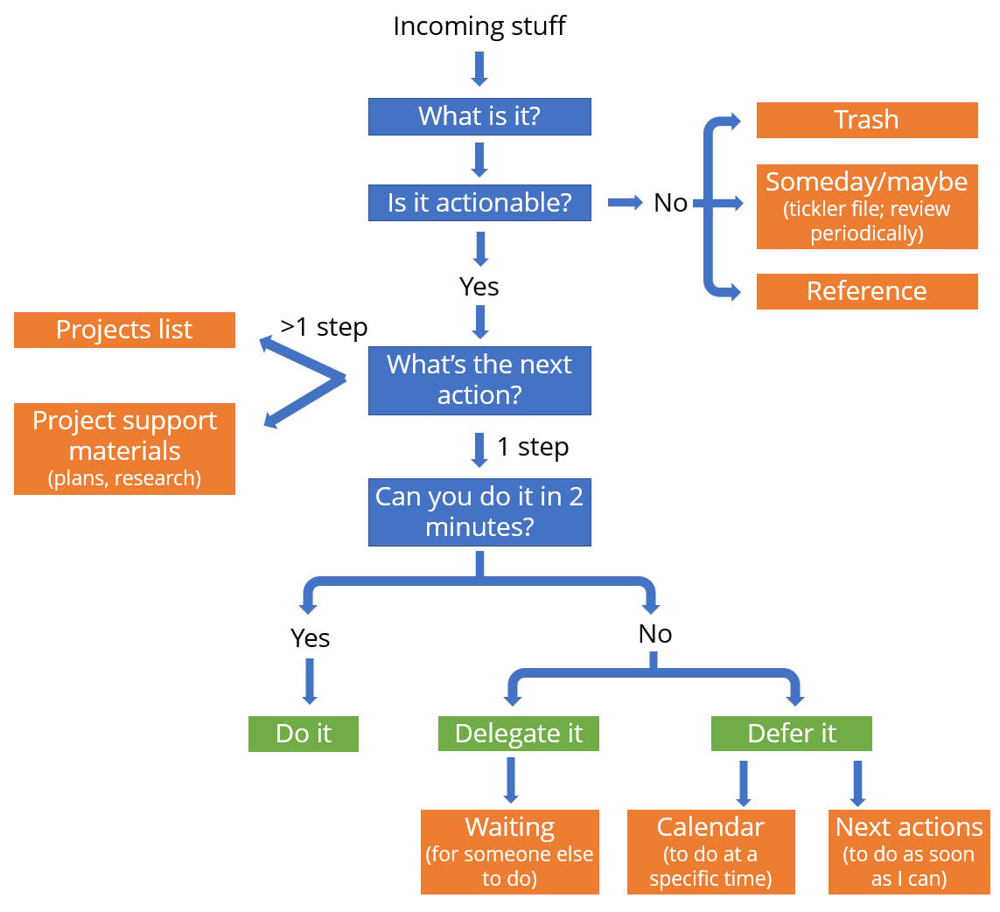

1
1-Page Summary
Do you feel like you’re always playing catch up with your to-do list? Are there never enough hours in the day?
The Getting Things Done (GTD) program is designed to help you do the things you have to do with less time, energy, and effort so you can do more of the things you want to do.
The crux of the GTD system is to store every task, reminder, and note bouncing around your brain in an external organization system to free up your mental energy to actually focus on the task at hand. Your brain is great at creating and processing things but not at remembering them, so trying to keep track of everything in your head saps your brainpower from doing what your mind does best.
Through the GTD system, you’ll capture every task and reminder on lists, in files, and on your calendar. You’ll be aware and in control of your entire workload so you can be fully present in each moment without the nagging feeling that you should be doing something else.
The five steps of the GTD system are:
Capture all the problems and ideas that are taking your attention.
Clarify what each one means and what you need to do about it.
Organize the decisions and actions you’ve clarified.
Reflect on everything in front of you to choose what to tackle next.
Engage with the task (get it done).
When you first start out, you’ll have a large mental backlog of items to capture and process, and this will take a good amount of time. After you get through it once, you’ll have all the items in the proper place. Then, on a regular basis (for example, daily), you’ll step through the five steps to capture and process new items, then figure out what you want to do that day.
Step 1: Capture
The first step is to capture every idea, reminder, and piece of information and get it out of your head. Capture everything—big and small, short-term and long-term, anything in your life that you feel should be different and that you have some motivation or commitment to change (anything from career strategy ideas to a reminder to fix that gadget in your junk drawer).
When you make a habit of capturing everything, you can trust that nothing will fall through the cracks. Other people will see your diligence and their trust in you will grow; furthermore, your trust in yourself and your confidence to accomplish things will grow.
Go through your desk, kitchen table, briefcase, and every other nook and cranny that could hold a note or reminder you need to process. Then wrack your brain for every other idea and loose end that’s nagging at you—whether it’s about a meeting you just had or a gift for your mom’s birthday next week.
Put everything in your in-tray. Don’t stop to work on anything else—just focus on capturing absolutely everything as quickly as possible. When you’re done, you’ll take time to assess every item.
Step 2: Clarify
The next step is to decide the intended outcome for each item and figure out what the immediate next action is to make progress toward that outcome. The “next action” is the immediate next physical step you can take toward a project’s completion. For example, if the item says “schedule meeting,” you need to decide what you need to do next to schedule that meeting: Check your availability? Book a conference room? Email meeting requests?
This front-end decision-making boosts your productivity because it forces you to determine how to tackle an item when it lands in front of you rather than waiting until you’re up against a deadline. Clarifying next actions turns seemingly daunting tasks into bite-sized actions you can easily complete and feel success with.
Based on the next action you determine for each item, you’ll either:
Throw it away. If it doesn’t require any action and you won’t need the information later, toss it.
Keep it for your reference files. These items don’t require any action, but they have information that may be useful later.
Do it. If the next action takes less than two minutes, do it now.
Label it a project. The GTD system defines projects as anything that requires more than one step and can be finished within a year—anything from planting your garden to learning new software at work. Put a sticky note on it labeling it a project and put it in a Pending pile.
Decide to delegate it. If the next action will take longer than two minutes, consider whether you’re the best person for the job. If not, put a sticky note on it marking that you’re delegating it and to whom, and put it in the Pending pile.
Save it for later. Label items that don’t require any action now but you might want to follow up on in the future as “Someday/Maybe.” If you want to create a reminder to reconsider it on a specific date, make a note of that date so you can put it in your tickler file or on your calendar in the next step. Put all these items in the Pending pile.
Defer to next actions. If it’ll take longer than two minutes and you can’t delegate it, label it “Next Action” and put it in the Pending pile.
Here’s a flowchart that shows Steps 1 to 3 more clearly:
Step 3: Organize
In the clarifying step, you made a decision about the next step for each item; now you’re going to organize the items into files, lists, and calendar items.
The author proposes a lot of different lists and files with different purposes, and it can be overwhelming. For now, focus on the big picture point—that each item gets put into its ideal place, which gives you mental confidence that you’ve accounted for everything on your plate, and that it’ll be there when you need it.
Although you threw away some items during Step 2, you might still come across items that, upon further consideration, you decide you don’t need. Trash them.
Now take the non-actionable reference items—whether they’re menus from your favorite food delivery spot or a list of contacts for members of the committee you chair—and make your reference files. There are two types of reference files: subject-specific files for one type of document, such as past contracts you may need for future reference, and general-reference files for anything that doesn’t fall into a specific category.
In order for your reference files to be useful, your organization must be simple and easily navigable. An effective filing system motivates you to keep up with filing new items and makes it easy to retrieve documents when you need them.
Now tackle the Pending pile. Based on what you decided in the last step, put each item in one of the following places:
Projects list is an index of your projects that are in the planning process, which helps you keep track of each project’s finish line and consistently determine each project’s next action.
Project Support Materials file holds project plans, research, invoices, and other documents.
Waiting For list helps you keep track of tasks you’re waiting for someone else to complete or items you’ve decided to delegate.
Someday/Maybe list is a running list of things you want to act on in the future. You must review this list regularly so you can decide when the time is right to pursue one of these ideas.
Tickler file (meant to tickle your memory) is a filing system that holds information, documents, and reminders you won’t need until a certain point in the future, such as a flyer for a play that doesn’t debut for another three months.
Calendar is for items that need to be done at a certain time or on a certain day, such as appointments, deadlines, or reminders. The only items that should go on your calendar are things that must happen on that day or not at all.
Next Actions list is a to-do list to be tackled as soon as possible; it’s essentially the catch-all for tasks that are actionable, take longer than two minutes, and can’t be delegated. If you have more than a few dozen next actions on this list, it helps to divide them up into categories based on what you need or where you need to be to tackle them, such as “Calls to Make” or “Office.”
Step 4: Reflect
Regularly reflect on all your lists and files to help you make smarter choices about which tasks to tackle. Review your calendar daily and your Next Actions list frequently, so you always know the immovable aspects of your schedule—like meetings and appointments—as well as what needs to get done when you have time available.
The fast pace of life and incoming items makes it nearly impossible to keep your system completely updated on a day-to-day basis, so a Weekly Review is critical for keeping your lists and files clean and current. During the Weekly Review, you’ll:
Review your Projects, Project Plans, Next Actions, Waiting For, Someday/Maybe lists, and your Tickler File
Capture anything you haven’t captured yet
Clarify any items that you haven’t clarified
Take stock of your whole organization system to make sure everything is running smoothly
Update your lists
Clean up and clear things out where needed
In addition to catching up, your Weekly Review is a chance for you to ponder big-picture ideas and projects and consider whether your day-to-day obligations align with your goals and values in life.
Step 5: Engage
The Getting Things Done system is designed to help you make informed choices about how you engage with your tasks, meaning what you do when you have time available. You can only feel confident about what you’re doing if you also feel confident about what you’re not doing at any given moment.
Now that you have a list of Next Actions to do, you need to choose what to work on today, in which order. Use the following three models for choosing which item on your Next Actions list to tackle.
The Four-Criteria Model: Narrow Your Options
This model helps you narrow down your choices based on four criteria:
Context: Certain tasks require you to be at a certain location or to have access to a certain tool (e.g. at the office or in front of a computer). It helps if you’ve already sorted your next actions into context-specific lists.
Time available: Some tasks require an hour of focused attention, so if you just have a few minutes before your next appointment this isn’t the time for that task.
Energy available: Certain tasks require a lot of mental or physical energy, while others don’t need much. Only tackle what you have the energy to take on.
Priority: After narrowing down your options with the first three criteria, prioritizing will be a more subjective decision based on your intuition and judgment. Use the next two models to help you choose by determining first what category of work an item falls into and then how it fits into your big-picture goals and values.
The Threefold Model: Types of Work
To make an informed decision about whether to take on a task, you must understand which of the three categories it falls into:
Predefined work is essentially anything on your Next Actions list and calendar, all of which you’ve clarified and deemed important.
Work that shows up encompasses the unanticipated tasks that arise during the day, whether it’s a last-minute report your boss assigns you or the surprise repair your car needs. Prioritize this work when it needs your immediate attention, but don’t fall into the trap of defaulting to what’s right in front of you when it’s not the most important or urgent.
Defining work is the time you spend maintaining the GTD system—clearing your in-tray, clarifying tasks, organizing, filing, and doing two-minute actions. You must prioritize time to do this regularly, ideally during your Weekly Review.
The Six-Level Model: Determine Priorities
In order to prioritize the options in front of you, you need to have a context for how they fit into the bigger picture of your life and priorities. There are six different levels—or horizons—of perspectives to determine your priorities:
The Ground is the current action on your Next Actions list. (Example: You have a phone call to make for work.)
Horizon 1 is current projects with relatively short-term timelines. (Example: The phone call is about a deal you’re trying to make.)
Horizon 2 is areas of focus and accountabilities, or the roles and responsibilities you have, from job duties to maintaining your health and family commitments. This horizon doesn’t consist of tasks but rather the interests and responsibilities that help to determine what projects and actions you’ll take on. (Example: This deal would increase the company’s sales.)
Horizon 3 is goals—specifically, horizon 3 encompasses goals for the next one to two years. (Example: Making the deal would earn you major points with your boss.)
Horizon 4 is vision, or your goals for the next three to five years. (Example: This success would likely lead to a promotion.)
Horizon 5 is purpose and principles; this is the big-picture context of your life. All your actions, projects, focuses, goals, and visions are defined by and also lead you toward your purpose and principles. (Example: A promotion will put you in a position that allows you to have the career and lifestyle you want.)
Use the Natural Planning Method to Plan Projects
Always have a next action identified for each project you have, so that you’re constantly making progress on your projects. Determining next actions on big projects can be daunting, but simply follow the same process you’d use if you were planning something in your daily life, like a birthday dinner with friends.
This approach is called the Natural Planning Method, and it consists of these steps:
Define your purpose and principles. Your purpose is the intention of the project, and your principles create the boundaries. If you’re planning a birthday dinner, your purpose is to celebrate and the boundaries could be factors like how affordable you want the restaurant to be.
Envision your outcome. Your purpose is your why, while your outcome is the what: What will a successful outcome look, feel, and sound like? You might imagine your dinner happening around a big outdoor table, with all your friends laughing and sharing food. When you picture something and focus on it, it helps you create it and makes you more excited to achieve it.
Brainstorm. This is the how. Your brain naturally wants to fill in the gaps to determine how to make your vision a reality. During this stage, you might question whether the restaurant is open today, what time you need to go, and whether there’s gas in the car. Use mind maps or other brainstorming techniques to jot down as many ideas as you can without judging or criticizing the ideas along the way.
Organize. This is the step when you organize all the random thoughts, questions, and ideas from the brainstorming process. You’ll naturally organize them based on logistics, priorities, and what needs to happen first: Call the restaurant to see if it’s open and make a reservation, then invite the guests, then get yourself dressed and ready to go.
Determine your next actions. Determine what can actually be done now, and who’s going to do it. For dinner, your next action is to call the restaurant.
Implementing and mastering the GTD system is a lifelong process that helps you manage your day-to-day obligations while keeping your larger goals in mind.
First, master the principles and practices, cement them as habits, and gain control of your daily tasks. Once you reach this point, take a bigger-picture approach to managing and organizing your life; proactively initiate projects to improve areas of your life. Ultimately, you can leverage the GTD system to implement new habits, tackle bucket-list aspirations, and create the lifestyle you want.
2
Introduction: The Getting Things Done (GTD) Program
The Getting Things Done (GTD) program is designed to increase your productivity and effectiveness—not so you can squeeze even more into your already busy life, but so that you can do things with less time, energy, and effort. When you feel in control of your life and your to-do list, you can be present in each moment without the nagging feeling that there’s something else you should be doing. When your mind is clear, you can focus and use your creative energy for the task at hand, and in your free moments, you can fully enjoy life without feeling guilty that you’re not doing something “productive.”
The GTD program is meant to be a lifelong practice, and you’ll continually graduate to more advanced levels of application. As you start to cement the strategies as habits, you’ll reach new levels of mastery to enhance your life and productivity in new ways: Once staying on top of your emails is second nature, use your skills (and newfound free time and energy) to take on a new hobby or strengthen your important relationships.
In the meantime, don’t wait until you finish the book to start using the strategies—put them into practice as you go. Practicing the skills will give you a richer understanding and help you dive deeper into the program.
Many readers regularly re-read this book and come away with something new each time. The program requires more habit changes than most people can fully implement all at once, so readers tend to absorb pieces at a time; after the first time through, start practicing the basics, and the next time you’ll better understand the strategies for refining those basic skills. Each time you read the book, you gain a new level of understanding and practice.
Revised Edition Of The Book: New World, Same Program
This book has been revised and updated from its original 2001 edition. The principles and general strategies remain the same, but the world is a different place than it was at the turn of the century, so the author has made the following adjustments and additions:
He incorporates the rise of digital technology and the ubiquity of apps designed to help you organize and schedule your life. The digital world compounds the problem of being overloaded with tasks and information while also offering more tools to deal with it. The author doesn’t list any specific apps or software, but he builds more flexibility into his advice about organizing with paper and digital tools.
He addresses a broader audience of people seeking help organizing their lives. The original version was geared more toward executives and professionals. The revised version acknowledges that everyone is overloaded with tasks and information—in large part because we’re living simultaneously in the real and digital worlds—and needs help gaining control of life’s many demands.
He takes a gentler approach to instructing readers on how to implement the program. Some readers of the original version felt that the GTD program was too overwhelming to take on; while the author doesn’t remove anything from the program, he emphasizes the fact that implementing it will be a long-term process, and that any pieces of the program you can put into practice will be helpful.
He adds cognitive research that affirms the validity of the GTD approach. Much of this evidence didn’t exist when the original was published, but studies have since proven his claims.
3
Part 1 | Chapter 1: Your Organization System Must Fit Your Life
What does your to-do list look like? Is it a hodgepodge of reminders, information, and projects from all areas of your life? Are you getting anxious just thinking about it?
In this chapter, we’ll talk about why your current system isn’t working and how the Getting Things Done program takes a different approach.
Outdated Time Management Tools Can’t Keep Up With Today’s Demands
Significant changes to daily life in the last half-century have overloaded people with work and personal responsibilities, so people need a more dynamic way of managing it all.
First, most people’s jobs are no longer restricted to the hours of 9 am to 5 pm nor to the confines of the office. These days, people are always on call via phone and email, and the effects of globalization mean you could be working with people nine time zones away. There are no boundaries to your workday, so it easily steals time from other parts of your life.
Second, the nature of work has changed from more industrial, assembly-line type work with clear, visible tasks to so-called knowledge work with much more ambiguously defined projects. Previously, you knew what your task was (for example, assemble these parts) and you knew when it was done. Now, one task can eat up a lot of your time because there’s no clear signal when you’re done.
Third, modern life requires near-constant communication with more people. Most organizations require increasing interdepartmental collaboration, so workers are no longer limited to their specifically defined roles and departments. In your personal life, too, there’s more pressure to stay connected with friends and family via the Internet and social media.
People have no clear boundaries to work and personal commitments, leaving them with little to no free time—or making them feel guilty or pulled in other directions when they do carve out free time.
Established time management tools were developed to organize life the way it used to be.
You need a system that can accommodate today’s faster pace of life and the information that comes from all directions. A modern organization system needs to incorporate minuscule daily tasks as well as big-picture goals, and it needs to be simple enough to save more time and energy than it requires.
Organize Your Life From the Bottom-Up
Many organizational systems promote organizing your life from the top-down, first determining your goals and values, then breaking that down into the projects and tasks that fall in line with them.
However, a top-down approach often leads to three problems:
You can easily get too distracted by urgent demands to even stop and think about your big-picture goals.
You may be so overwhelmed by your day-to-day demands that the thought of incorporating big-picture goals is daunting and stressful.
Your big-picture goals and values are likely to raise more tasks and to-dos, which adds to your overloaded schedule instead of clarifying and culling it.
Instead, the bottom-up approach that the GTD program promotes is more feasible: Once you have a system to keep your small-scale tasks under control, it’ll free up your energy, focus, and creativity to consider larger goals. Additionally, big-picture goals will inevitably break down into smaller action steps, which will be easier to tackle if you already have a system in place.
Horizontal vs. Vertical Control
There are two ways to manage your commitments and actions:
Horizontal control takes stock of your projects and tasks in all areas of your life—from getting your car repaired to finishing a report for work. This requires an organized system that can keep track of everything, helps you call up relevant reminders and information when you need it, and lets you switch your focus quickly and easily.
Vertical control goes into the details of one specific project or topic. This might be all the details, research, and planning you need to do for a work report or home addition. Vertical control requires a system that lets you organize and easily access plans, notes, and reminders about this one topic.
GTD is designed to accommodate both management systems because life requires both horizontal and vertical planning.
Manage Your Actions
Most to-do lists are made up of “stuff”—plans and commitments that you haven’t yet broken down into actionable steps. Lists full of stuff are ineffective and overwhelming.
An effective productivity system doesn’t manage your time, information, or priorities; it manages your actions. The GTD program teaches you how to take this stuff, give it meaning, and turn it into “next action” steps using three objectives:
Have a trusted external system (outside your memory) to capture everything you must do, might need to do, or might need later.
Be decisive about all your tasks and commitments and have a running to-do list of next actions.
Organize all of the information and to-dos into appropriate categories and contexts.
When you have an organized external system of actionable items and trusted reminders, your brain doesn’t have to juggle all these thoughts and information—which is good because your brain doesn’t do a great job of it anyway.
Research shows that your brain can’t help but continually remind you about all the things you have to do, which is more of a distraction from your current task than a motivator to accomplish those pending tasks. How often do you think of something you need to do at random times when you can do nothing about it? Not only is it ineffective, but it adds to your stress and anxiety about all the things you need to do.
An Effective System Calms and Clears Your Mind
If you throw a pebble into a still pond, how does the water react? Its reaction is directly proportional to the size of the pebble and the force of your throw—the water doesn’t overreact or underreact.
An effective productivity system makes your mind like water, reacting in direct proportion to the size and importance of the task at hand. When your mind is calm and in control, you can attack each task and project in a state of calm focus and productivity—a “flow” state or being “in the zone.”
In contrast, when you get overwhelmed and don’t feel in control of your life and to-do list, it’s easy to overreact to small demands and underreact to important ones (for example, flipping out when your boss adds a relatively small task to your plate, or not putting enough energy into an important presentation because you’re too overloaded).
Many people live in a constant state of at least mild stress because they don’t have the tools to manage everything. The GTD program gives you the tools to regain control so that you can access that water state of mind.
Manage Your Commitments
The source of many people’s stress is having too many internal commitments or not managing them effectively. These commitments can be as big as hiring a new employee or as small as replacing a lightbulb—anything that’s floating around your mind and nagging at you.
In the GTD program, these are called “open loops.” Open loops pull your attention away from the task at hand and need to be addressed to get them off your mind. But you don’t have to actually complete the task in order to get it off your mind. You just need to take these steps:
Capture it in an external system called a collection tool, and regularly sort through the system.
Clarify exactly what you want to accomplish and what you need to do (next actions) to make progress on it.
Set up reminders to take the actionable steps you’ve identified.
Even though you haven’t actually taken any steps to complete the task, these simple steps make you feel more in control because you engaged your mind in how to resolve the problem rather than just thinking about the problem.
4
Exercise: Capture, Clarify, and Organize
Open loops can be mentally draining before you’ve even made any progress on completing the task. Apply this exercise to your open loops to help clear your mind and get things done.
Name a project or task that’s been weighing on your mind, anything from a project at work to planning your next vacation.
In one sentence, what is a successful outcome that would make you consider this project done?
What’s the immediate next physical action you need to do in order to move things forward on this?
How do you feel now toward the situation compared to how you felt at the beginning of this exercise?
5
Chapter 2: An Overview of the GTD System
The Getting Things Done system has five steps:
Capture all the problems and ideas that are taking your attention.
Clarify what each one means and what you need to do about it.
Organize the decisions and actions you’ve clarified.
Reflect on everything in front of you to choose what to tackle next.
Engage with the task (get it done).
Devote time to each step individually, rather than trying to go through all five at once: Take some time to sit and capture everything in your head, go through and clarify all those items during another sitting, and so on.
Most people do these five steps naturally, but not as efficiently as they could. Many people fall into one of these traps:
They don’t capture everything, leaving too many open loops in their heads.
They don’t clarify sufficiently, so they have ambiguous to-do lists, notes, and reminders that don’t tell them exactly what to do.
They don’t organize efficiently, so the reminders get lost and tasks don’t get done in a timely way.
They don’t spend enough time reflecting, so they have lists, calendars, and reminders that are overloaded and out-of-date.
They tackle whatever is the most immediate and demanding instead of making strategic decisions about what to engage in.
Let’s talk about each step, and in later chapters we’ll explore them in more detail.
Step 1: Capture
The first critical step is to capture every idea, reminder, and piece of information and get it out of your head. Capture everything—big and small, short-term and long-term, anything in your life that you feel should be different and that you have some motivation or commitment to change—from career strategy ideas to a reminder to fix that gadget in your junk drawer.
Put all these things into “containers,” which can be:
Paper notebooks, note cards, or pads
Physical in-trays
Emails or text messages
Digital or audio note-taking systems/apps
Whatever type of container you use, make sure that it is always with you so that you can capture something as soon as the thought enters your head.
There are three requirements for a successful capture system:
Capture every open loop. If you still have things floating around in your head, you won’t have the mental energy to sort through and empty your containers (that’s the next step).
Have as few capturing buckets as possible. If you have too many, the system will get unmanageable and you won’t be able to go through the containers regularly.
Empty your containers regularly. If your containers get backlogged, things get lost and your brain won’t trust your system, so it will keep reminding you of things even after you’ve captured them. You don’t have to complete the tasks in order to empty the containers—you just have to clarify and organize them.
Step 2: Clarify
Before you can organize all that you’ve captured, you need to decide the intended outcome for each item, then figure out the immediate next action you need to take to make progress toward that outcome.
Based on what you determine for each item, you’ll either:
Throw it away. If it doesn’t require any action and you won’t need the information later, toss it.
Keep it for your reference files. These items don’t require any action, but they have information that may be useful later.
Do it. If the next action takes less than two minutes, do it now.
Label it a project. The GTD system defines projects as anything that requires more than one step and can be finished within a year—anything from planting your garden to learning new software at work. Put a sticky note on it labeling it a project and put it in a Pending pile.
Decide to delegate it. If the next action will take longer than two minutes, consider whether you’re the best person for the job. If not, put a sticky note on it marking that you’re delegating it and to whom, and put it in the Pending pile.
Save it for later. Label items that don’t require any action now but you might want to follow up on in the future as “Someday/Maybe.” If you want to create a reminder to reconsider it on a specific date, make a note of that date so you can put it in your tickler file or on your calendar in the next step. Put all these items in the Pending pile.
Decide the next action. If it’ll take longer than two minutes and you can’t delegate it, label it “Next Action” and put it in the Pending pile.
Here’s a flowchart that shows Steps 1 to 3 more clearly. Don’t get overwhelmed by all the possible actions and items—the flowchart shows that it’s fairly intuitive.
Step 3: Organize
In the clarifying step you made a decision about the next step for each item; now you’re going to physically sort them into files, lists, and calendar items. Based on what you decided in the last step, put each item in one of the following places:
Trash: Although you threw away some items during Step 2, you might still come across items that, upon further consideration, you decide you don’t need.
Reference files: This is where you’ll store information you may want later.
Projects list: This is an index of your projects that are in the planning process.
Project Support Materials file: This file holds project plans, research, invoices, and other documents.
Waiting For list: This is where you’ll keep track of tasks you’re waiting for someone else to complete or items you’ve decided to delegate.
Someday/Maybe list: This is the place for things that don’t require any action now, but might later.
Tickler system: This system of files functions like your Someday/Maybe list, but creates date-specific reminders to revisit items.
Calendar: Schedule actionable items that need to be done at a certain time.
Next Actions list: This is your to-do list of items to be tackled as soon as possible.
Let’s cover each in more detail.
Reference
Reference materials don’t require any specific action but might be useful to have on hand in the future—whether it’s menus from your favorite food delivery spot or a list of contacts for members of the committee you chair.
Reference materials can be stored physically in filing drawers and cabinets or digitally in computer files. If you have emails that you want to keep for reference, you can print them out for your physical filing system or create folders in your email server so they don’t clog up your inbox. For other digital documents, experiment with different methods of organizing (e.g. digital folders, the cloud, or organizing apps and software) to find what works best for you.
There are two types of reference systems:
Subject-specific, which means you’ll have one folder or one filing cabinet dedicated to one type of document (e.g. past contracts you may need for future reference).
General reference, which is the catch-all for anything that doesn’t fall into a specific category. It’s critical that you have an easily accessible, well-organized general reference file so that those random notes and documents don’t end up in a pile that overwhelms you—undermining the whole system—or you inadvertently bury actionable items.
Projects List and Project Support Materials File
The GTD program defines projects as anything that takes more than one step and can be completed within a year. That includes everything from enrolling your kid in school to planting your garden to learning new software at work.
Since projects require multiple steps to complete, the Projects list helps you keep track of the outcomes or finish lines for each one so that you can:
You’ll probably accumulate support materials—such as research, invoices, and other documents—for many projects. Organize these by project or topic and keep them in separate files; your Projects list merely serves as an index of these files.
You can keep your files of support materials with your reference files, or in a more accessible location if you’re working on a project that calls for you to consult your support materials several times a day. Whatever your system, keep it as simple as possible.
Waiting For List
Many of your projects will include steps that require someone else’s input or action before you can take your next action. Any time you’re waiting on someone, add the item to your Waiting For list so you can keep track of everything and follow up when necessary.
Additionally, if you’re invested in the outcome of an item you’ve delegated to someone else, add that item to your Waiting For list.
Someday/Maybe List and Tickler System
Some things you’ve captured won’t be actionable yet—maybe a flyer for a concert that’s still a few months away, or an idea for a project you might want to do someday but don’t have time to begin now.
There are two options for these types of items:
1) Someday/Maybe list: This is a running list of things you might want to act on in the future, from learning a new language to making a personal website. You’ll review this list regularly so that you can decide when the time is right to pursue one of these ideas.
You might want to have various categories of Someday/Maybe lists, such as “Recipes to Try” and “Books to Read.”
2) Tickler system: A tickler system is typically organized as a file that holds information and reminders you don’t need until a certain point in the future (for example, a flyer for a play that doesn’t debut for another three months). You can also use your calendar for this, for example making a note on March 15 that tax day is one month away.
Calendar
Among the actionable items that take longer than two minutes and that you can’t delegate, there will be some that are time-sensitive and others that just need to get done as soon as possible.
Use your calendar to track all time-sensitive tasks and information, including:
Actions that are time-specific, such as appointments
Actions that are day-specific, such as deadlines
Information that is day-specific, such as directions for an appointment or short-term reminders like “call Suzie when she gets back from vacation”
The only items that should go on your calendar are things that must happen on that day or not at all.
That means no more daily to-do lists; you’ll have a Next Actions list instead, which we’ll talk about next. Daily lists are ineffective for two reasons:
Through the course of the day, you’re likely to get new information and new task assignments that require you to constantly add to and reconfigure your to-do list. Then, not only are you probably ending each day with a discouraging list of things you didn’t get done, but you also have to spend time copying those things over into a new list for the following day.
It’s easy to add things that are aspirational rather than absolutely necessary, so your to-do list gets bogged down with extra tasks and you lose sight of what absolutely has to happen today. Better to have the calendar strictly show things that must happen that day and supplement with a short list of things you’d like to do if you have time.
Next Actions List
The Next Actions list is essentially the catch-all for tasks that are actionable, take longer than two minutes, and can’t be delegated. Reference your Next Actions list whenever you have free time to tackle a task.
If you have more than a few dozen next actions on this list, it helps to divide them up into categories based on what you need or where you need to be to tackle them. For example, make a list of the calls you need to make, and another list for tasks that require you to use a computer.
Step 4: Reflect
You can have all your to-dos organized to a tee, but it does you no good if you don’t regularly review and reflect on them. Regularly reflecting on all your lists and files helps you make smarter choices about which tasks to tackle; that makes the difference between writing down that you need milk and remembering it when you’re at the grocery store.
Review your calendar most often, because it holds the tasks that have to get done within a certain time window. The Next Actions list will be the second most frequent, so you can see what needs to be done when you have time between scheduled tasks.
Review Everything Weekly
Given the fast pace of life, even an organized system can collect some debris over the course of a few busy days. Instead of taking the time to constantly keep your organization system spotless, try your best to maintain it and set aside time once a week to clean everything up.
Think of it like cleaning your house: You keep things pretty well ordered through the week but it’s not worth your time to deep clean everything every day, so you leave the deep cleaning and laundry for Sundays.
Once a week, review your Projects, Project Plans, Next Actions, Waiting For, and Someday/Maybe lists. During the Weekly Review, you should also:
Capture anything you haven’t captured yet
Clarify any items that you haven’t clarified
Take stock of your whole organization system to make sure everything is running smoothly
Update your lists
Clean up and clear things out where needed
The only way to keep your mind clear is if you trust the system, and in order to trust it, you need to maintain it and keep things current. The Weekly Review is essential for this.
Step 5: Engage
The previous four steps—and the entire GTD system—is designed to help you determine how to engage, as in choosing which things to do when. You can only feel confident about what you’re doing if you also feel confident about what you’re not doing at any given moment.
Through capturing, clarifying, organizing, and reflecting, you’ve crystallized the actionable steps you need to get done as soon as possible in your Next Actions list. Use the following three models to choose which item on that list to tackle at any given time.
The Four-Criteria Model: Decide How to Act in the Moment
When you have a few minutes to work on an item on your Next Actions list, use these four criteria to decide which item to tackle by process of elimination:
Context: Certain tasks require you to be at a certain location or to have access to a certain tool (for example, at the office or in front of a computer).
Time available: Some tasks require an hour of focused attention, so if you just have a few minutes before your next appointment this isn’t the time for that task.
Energy available: Certain tasks require a lot of mental or physical energy, while others don’t need much. Only tackle what you have the energy to take on.
Priority: Some tasks naturally have a higher payoff than others, so prioritize those. After narrowing down your options with the first three criteria, use the next two models to prioritize based on your intuition and judgment.
The Threefold Model: Evaluate Your Work
In order to determine what to do, you also need to understand what type of task it is. To further prioritize, categorize your task as one of three different types of activities:
Predefined work is essentially anything on your Next Actions list and calendar. You’ve already clarified and deemed that these tasks are important, so make them a high priority.
Work as it shows up encompasses all the unanticipated tasks that pop up during your day—your boss walks in your office to talk about a new project, or you find out your aunt is in the hospital and you need to send flowers. Prioritize these tasks when they’re more urgent and important than your predefined work; otherwise, put them in your in-tray.
Defining your work is the time you spend maintaining your GTD system, clearing your containers, clarifying tasks, organizing, filing, and doing the actions that take less than two minutes. Prioritize time to do this during your Weekly Review.
The Six-Level Model: Put Your Work in Context
In order to prioritize the options in front of you, you also need to have a context for how they fit into the bigger picture of your life and priorities. If your boss asks you to chair a committee at work, it may seem important until you stop and consider whether devoting your time and energy to that helps you achieve your professional goals.
Consider these six different levels—or horizons—of perspectives to determine your priorities:
The Ground is the current actions on your Next Actions list.
Horizon 1 is current projects with relatively short-term timelines, such as organizing a conference or finding a new dentist. Your projects dictate many of your actions.
Horizon 2 is areas of focus and accountabilities, or the roles and responsibilities you have, from job duties to maintaining your health and family commitments. This horizon isn’t comprised of tasks but rather the interests and responsibilities that help to determine what projects and actions you’ll take on.
Horizon 3 is goals, another horizon that dictates your projects, actions, and accountabilities. Specifically, horizon 3 encompasses goals for the next one to two years.
Horizon 4 is vision, or your goals for the next three to five years. Again, this influences your shorter-term goals as well as your areas of focus, accountabilities, projects, and actions.
Horizon 5 is purpose and principles; this is the big-picture context of your life. All your actions, projects, focuses, goals, and visions are defined by and also lead you toward your purpose and principles.
In Part 2 of this summary, we’ll talk about how to apply these models to your prioritizing and decision-making.
6
Exercise: Adapting Your Organization System
Many people are already doing some aspects of the GTD program without realizing it. Use this to assess your current system and see where you could fine-tune it.
How do you currently organize and keep track of your to-dos?
How does your current system fall short (e.g. you sometimes miss appointments or documents and papers pile up on your desk)?
What aspect of the GTD system could help fix these problems?
How can you adapt your system to incorporate these practices?
7
Chapter 3: Project Planning
In Part 2, we’ll go deeper into implementing the Getting Things Done system, but first, let’s take an aside to discuss projects. Many of your next actions will stem from projects—which can be anything from getting a new printer to remodeling your home to planning a business merger—so it’s important that you know how to plan and execute them effectively.
How you approach planning your projects is a critical factor in whether you complete them, how successfully, and how stressful the process is.
The Natural Planning Method Overview
Many people lean toward formal planning methods, especially in business contexts (for example, planning sessions and project management software).
Planning sessions often start with a manager soliciting ideas for a project such as planning a conference. People start to throw out ideas for venues, events, and speakers, but they don’t make much progress because people are suggesting different cities and topics. The manager then realizes the team needs to organize and brainstorm. But they’re still not getting very far because everyone isn’t on the same page. Finally, they face the question, “What’s the vision and purpose?” That’s the foundation of any project.
This approach is the Reactive Planning Model, and it’s not very efficient or effective.
Taking the wrong approach to planning projects makes the process feel daunting and causes many people to put off planning until the last minute. Additionally, it can lead you to:
By contrast, the Natural Planning Method is a much more effective approach, and you’re probably already doing it in your everyday life—you just might not realize you’re doing it. There are five steps of natural planning; we’ll give an overview of them and look at how they apply to planning a dinner out, then we’ll explain each one in depth.
1) Define your purpose and principles. Your purpose is the intention of the project, and your principles create the boundaries.
Your purpose in going to dinner is to celebrate a birthday, and the principles or boundaries might include how nice the restaurant will be and its affordability and convenience.
2) Envision your outcome. Once you’ve determined that you're planning a project and why you’re planning it (your purpose), you naturally begin to envision what it’ll be like. This is the physical feel, look, and sound of the project.
For dinner, you might envision your group of friends sharing food and laughs around a big outdoor table.
3) Brainstorm. Now that you have the vision, your brain wants to figure out how to make that vision a reality. In random order, your thoughts will bounce around to what you need, who you need to talk to, and how you can accomplish these tasks.
In the context of dinner, this includes questions like “Is the restaurant open?” “What time should we go?” and “Is there gas in the car?”
4) Organize. After the swirl of brainstorming thoughts, you naturally begin to organize them based on components (logistical tasks to make the project happen), priorities (information you need to determine if the project is feasible), and sequences (which actions need to happen first). This is when challenges, comparisons, and evaluations naturally arise because you’re determining which actions are more important and need to happen first. In your dinner planning, the components involve inviting people to go, making sure the location will work, and handling logistics. The priorities might be to find out if the birthday girl even wants to go to dinner. The sequences are deciding that first you need to call the restaurant to see if it’s open, then invite the guests, then get yourself dressed and ready to go.
5) Determine your next actions. This is a natural outgrowth of the organizing step.
For dinner, you’ll have decided that the next action you need to take will be to see if the restaurant is open and make a reservation.
Step 1: Define Your Purpose and Principles
This step is all about defining your why. Why are you doing this project? What’s its purpose? What’s your intention in completing it? What will result from a successful outcome?
Defining your why helps you:
Define what success is. If you don’t know your purpose and intention in doing something then you can’t know if you’ve succeeded.
Determine criteria for your decision making. Knowing your why allows you to know whether something is necessary for achieving that purpose.
Align resources. This is an offshoot of your decision making; an investment is worth it if it helps you achieve your purpose.
Get motivated. How can you get excited about doing something if you don’t know why you’re doing it?
Clarify your focus. Everything is clearer when your purpose is defined and top-of-mind.
Expand your options. When you’re focused and clear on your purpose, then it opens up your creative thinking about all the ways you can achieve it.
In order to achieve all these things, your purpose statement must be specific. Broad, ambiguous purpose statements won’t give you an adequate definition of success, nor will it give you clarity or motivation (for example, instead of a purpose being “to assemble a strong team,” a more specific purpose is “to assemble a team of collaborative, motivated people who communicate effectively”).
While purpose gives you your why, principles give you your how. Principles define the parameters for how you and your team achieve your goal. What are the standards and values for behavior?
Principles are always present, though you may not be in the habit of consciously defining them. Pin down your principles by finishing the sentence, “My team can have free rein as long as they …” What are the lines you don’t want crossed? Appeasing the client? Staying under budget? Finishing on time?
Also, ask yourself what kind of conduct could undermine your why. When you have defined your principles, you need to clearly communicate them to everyone involved.
Step 2: Envision Your Outcome
Your vision is the what of your project—what is it going to look, sound, and feel like? In this step, create the blueprint of your desired result, whether it’s a one-line statement or a fully fleshed out scene in your mind.
Envisioning and focusing on an outcome actually gears your mind toward achieving it; athletes use this method, picturing themselves crossing the finish line first or seeing the basketball drop into the hoop. When you picture something and focus on it, it helps you create it and makes you more excited to tackle it.
It’s easier to envision an outcome you’ve achieved before or have some experience with, but this step can trip you up when you’re trying to do something you’ve never done before. If you’re struggling with this, focus on specifics.
What do you want the finished project to look like?
How do you want the client to react?
What will change as a result of the success?
Step 3: Brainstorm
Brainstorming is another how, referring not to conduct but to the logistics and steps to accomplishing your project.
When you brainstorm, follow these three rules:
1) Don’t criticize, judge, or challenge ideas. You can be most creative when you’re not self-censoring or restricting yourself by thinking about what could be wrong with one idea or another. In a group setting, create an open and inclusive atmosphere where people feel comfortable to throw ideas out and see what sticks.
People can still point out what might be problematic with an idea, but they should frame their thoughts in a way that leads to follow-up ideas, rather than simply shutting down an idea or train of thought.
2) Aim for quantity over quality. Cast a wide net for ideas. The more ideas you put out there, the better your odds of having some great ones in the pile.
3) Analyze and organize later. Trying to analyze and organize your ideas as you come up with them will stifle your creativity. Let loose now, knowing that you’ll organize your thoughts in the next step of the process.
You can brainstorm small projects in your head, but writing down your ideas is useful for the same reason it helps to capture all your tasks in an external place: It gets them out of your head. When you’re brainstorming, writing down your ideas frees up your mind to keep thinking creatively and come up with even more ideas.
Since brainstorming produces ideas big and small, in random order, there are several techniques you can use to capture your ideas that are less structured and linear than a list, including:
Mind mapping
Patterning
Clustering
Fish boning
Webbing
Step 4: Organize
Once you’ve emptied your head of all the ideas and questions during the brainstorming process, you’ll begin to see a natural order and structure to them.
When you organize, follow these three steps:
Determine the most important aspects that must happen in order for the project to be completed and successful.
Sort them into components, priorities, and sequences.
Fill in the necessary detail.
Depending on the project and your preference, you can achieve this with quick bullet points, outlines, or project-planning software.
Step 5: Next Actions
This is the stage when you determine what can actually be done now, and who’s going to do it.
If you have a project with multiple components, take a look at whether there are next actions for each of them; sometimes, you won’t be able to start work on one component until you’ve made progress on another component. Across the scope of the project, identify every next action that you (or someone on your team) can start moving on now.
If you’re working on a team, you don’t need to know every person’s next action. Just make sure each person has her assignment, and she can determine her next actions. If you’re waiting on someone else to finish something before you can take your next action, keep track of it on a project-specific Waiting For list (we’ll talk more about Waiting For lists in Chapter 7).
This stage brings issues and questions to the surface, because you have to break things down to each minute action. If you discover holes in the planning and details, your next action might be some aspect of planning—brainstorming ideas, getting feedback from others, or planning meetings.
If you need more clarity on the project in order to determine next actions, move up the natural planning process to get things better organized, brainstorm more ideas, or get a better grasp of your vision or purpose. On the other hand, if you see that there’s not enough movement on the project, move down; flesh out and organize ideas so that you can determine next actions and actually start doing them.
8
Exercise: Apply The Natural Planning Method
Practice applying the Natural Planning Method to a project in your life.
Step 1—Define Your Purpose and Principles: Think of a project you’re currently working on or plan to begin soon. Define the purpose and principles of the project.
Step 2—Envision Your Outcome: What would constitute a successful outcome?
Step 3—Brainstorm: Write down the first 3-5 ideas for this project that come to mind.
Step 4—Organize: Based on what you’ve brainstormed, what’s the most important aspect that must happen in order to reach your desired outcome?
Step 5—Next Actions: What’s the next action you can take on this?
9
Part 2 | Chapter 4: Set Yourself Up for GTD Success
Now that you’ve learned the models and the methods, it’s time to start applying the Getting Things Done program to your life.
It’s one thing to know what you should do, and quite another to actually do it, so Part 2 provides some coaching and practical tools for implementing the GTD system. You can implement the full-scale system, or adopt a few aspects and implement more over time.
Dedicate Time
Your biggest time investment will be in getting the GTD system up and running. It takes most people two days back-to-back to fully get things started—about a day to capture and another day to clarify and determine next actions.
The initial process takes a lot of mental energy, so aim to dedicate a day or two to it with no distractions. If you work on this after you get home from work at the end of the day, your energy will probably be too tapped to effectively capture and clarify everything without falling down rabbit holes.
Once you have the system set up and in place, you’ll be able to maintain it during much shorter windows of free time in your days.
Dedicate Space
Designate a physical location in your home where you can manage your workflow and keep your in-trays and files. Even if your system is mostly digital, it’s almost inevitable that you’ll have some papers to deal with, so you need a place to store and process them.
Your workspace should have:
You may also want:
A printer
File drawers
Stacking trays
Reference shelves
A whiteboard
If you work at an office, create an almost identical setup at work so that you can manage your system wherever you are when things come up. If you share a workspace at home or at work, carve out your own space in order to keep your system organized and effective.
If you travel a lot or work remotely, you may also want a portable office with a briefcase, satchel, or backpack as well as necessary folders and workstation supplies (we’ll get into those in the next section); don’t lose valuable opportunities to be productive when you’re in transit and unprepared.
Get The Right Tools
You need a handful of supplies in your workspace to make this system go.
In addition to whatever you choose to use for capturing, organizing, and maintaining your lists (such as planners, notebooks, a computer, tablet, and/or phone), you’ll need:
Calendar for tracking date-specific actions and reminders (you can keep using whatever calendar you currently use; once you start using the GTD system you’ll get a better sense of whether you need a different type of calendar)
File folders for organizing projects and general reference materials
Automatic labeler for file folders
Paper-holding trays for your in-tray, out-tray, work-in-progress tray, and/or read-and-review tray
Pen or pencil
For organizing and filing papers:
Paper clipsRubber bandsScotch tapeStaplerSticky notes
Plain paper or notepad for capturing and making lists
Trash or recycling bin to keep your space (and mind) clear of unnecessary items
You may or may not also want to use some kind of organizer, whether it’s a planner, notebook, phone app, or some combination. If you’re already using something and it’s working for you, incorporate it into this system.
The GTD program isn’t rigid; tailor it in a way that will get you to use the system.
Your Filing System Is Vital For Success
A well-organized, easy-to-navigate filing system is essential.
Create a filing system that’s quick and easy to use to make it as easy as possible for you to clear your in-tray and keep your whole organization system running smoothly. If it’s clunky and unappealing, you’re likely to put it off and end up with papers stacked in the wrong places, clogging up your workflow.
Keep a functional general-reference file, which can hold instruction manuals, brochures, articles, membership cards, flash drives, even foreign currency you want to keep for your next trip. If you don’t have a place for documents that aren’t actionable but that contain information you might need later, they’ll clutter up your workspace and your mind, making it hard to keep up with the system.
If you prefer, you can also digitize just about everything in your files (except the currency) to make it accessible from anywhere. But allow some time to figure out the scanning, organizing, and digital storage workflow that works best for you.
Here are some tips to make your filing system a success:
Keep your general-reference files within arm’s reach. An easy and accessible system encourages you to keep up with it and file documents away before they pile up in your in-tray.
Keep extra file folders on hand. Eliminate any roadblocks to filing, so if you have something that doesn’t fit in an existing file, make a file on the spot and keep things moving.
Use your labeler to label files. The uniformity is aesthetically pleasing and makes the filing system easier to use.
Alphabetize your files. Instead of organizing files by subject or project, keep them in alphabetical order for simplicity and to minimize the chance that you won’t remember where something is when you’re looking for it.
Don’t overstuff your filing cabinet. Try to keep your file drawer from getting more than three-quarters full. You’ll be less inclined to file if it’s overflowing. If you have to buy another filing cabinet, first see if you have any files you can purge and then accept that if things are worth keeping, they’re worth keeping organized.
Comb through files and purge once a year. Regularly purging your files has two benefits: First, it keeps things clean, current, and organized. Second, you can feel comfortable keeping and filing documents that you’re not sure you’ll need, because you’ll have the chance to reassess during your annual purge. (It may be helpful to put a reminder for your yearly purge day on your calendar or in your tickler file.)
10
Exercise: Establish Your GTD Setup
Implementing the GTD system requires some time, space, and the right tools.
Looking at your schedule, when can you dedicate a day or two to setting up your GTD system, ideally without any distractions?
Where in your home can you dedicate a workspace (that you don’t have to share) to keep your in-trays, files, and tools?
Which tools do you need to buy to set up your workspace?
If you plan to use digital storage, what system or software do you plan to use?
11
Chapter 5: Step 1—Capture Everything
Now that you have your workspace set up and the time set aside, dive in with the first step: capturing.
There are a few benefits to getting everything in one place in front of you before you begin the next step, clarifying:
You know how much stuff you have to go through.
You have a definitive endpoint (at least for now, until life gives you more to capture).
You can focus on clarifying and organizing when you get to those steps, without feeling like there’s still more stuff out there.
Part 1: Capture Physical Items
Capturing is more all-encompassing than simply jotting down a list off the top of your head. For your initial capturing, go through physical holders of notes and reminders, including:
If you can’t get to every spot right now, make a placeholder note (e.g. “Clean out hall closet”) and put it in your in-tray to remind you to do it later.
Gather anything that doesn’t belong where it is the way it is, and put it all into your in-tray. This includes:
Binders
Business cards
Catalogs
Mail
Manuals
Notes
Reading material
Receipts
Reference materials
Reports
By the nature of this process, you’ll end up with a lot of things that aren’t that important—that’s why you probably put them off in the first place. But you need to capture them nonetheless so that you have no open loops.
Follow these guidelines for capturing:
Scan your entire physical surroundings for anything that is incomplete (for example, gadgets that need to be repaired and furniture you’ve been meaning to move).
Generally, you can leave supplies (such as stationery, batteries, and paper clips), reference material (such as software manuals and contact lists), decorations (such as photos and artwork), and equipment (such as a computer and printer) where they are unless there’s something about them you need to move, fix, update, or otherwise alter.
This isn’t about throwing everything away. This system is designed to allow you to keep everything you want to keep, as long as it’s either the way you want and in the place you want it or it has been captured.
Beware of Capturing Pitfalls
Capturing is a big job, and it’s easy to get tripped up along the way. There are several common capturing issues that you can avoid.
First, if an item is too big to physically fit in your in-tray, simply write a note on a piece of paper to represent it (it’s good practice to date it, too) and put that in your in-tray. If your pile of papers is too big to fit in your in-tray, make stacks around the in-tray and just be careful that it’s clear that they’re “in” and they don’t get mixed up with other documents.
Second, when you come across things that you immediately know you won’t need, trash it on the spot. However, if you have any doubt, just put it in your in-tray and rest assured that you’ll have time to assess it during the clarifying stage; clarifying requires a different mindset, and you don’t want to let yourself get caught up in that right now. For now, just focus on capturing everything as quickly as possible.
Similarly, don’t fall into a rabbit hole of purging and organizing as you go through your house, office, and other physical spaces. If you have the time to do it, then go for it, but capturing is your priority. To keep things moving, add papers to your in-tray that remind you to “purge kitchen cabinet” or “organize desk” later.
Third, if you already have certain items on lists or in organizers, simply treat them as items to be processed. You want everything in a single, uniform system, so unless your current organization fits the GTD model, you need to reorganize it.
Fourth, if you come across something that you forgot about but is fairly urgent, you can:
Do it now. It’s best to avoid interrupting the capturing process, but if it’s absolutely urgent, you’re better off getting it done and off your mind.
Put it in the in-tray. Don’t worry about losing it in the ever-growing stack in your in-tray because you’ll be sorting through that pile next so you’ll come across this reminder within the next couple of hours or days.
Put it in an emergency stack. Ideally, you want everything in a single in-tray pile, but if this solution puts your mind at ease you’ll be better able to finish capturing.
Part 2: Capture Mental Items
After sweeping through your office, home, and anywhere else you’ve stored tasks and reminders, wrack your brain for anything else that’s still pulling at your attention. Just like with the physical capturing process, capture everything—big and small, urgent and aspirational—that’s taking up any space in your brain.
Write each thought, idea, project, and reminder on a separate sheet of paper. This might seem inefficient, and you’ll probably end up with a lot of papers, but this makes the clarifying stage much easier.
Random thoughts may remind you of certain tasks, so review these lists of “Incompletion Triggers” to see if it reminds you of something you need to capture. (Shortform note: The book includes more exhaustive lists. We encourage reading the original book for a complete guide to setting up your GTD system.)
Professional Incompletion Triggers
Projects to be researched, started, or completed
Phone calls, voicemails, and emails
Reports and evaluations
Meetings to be scheduled
Marketing plans
Upcoming events
Presentations
Professional development
Skills to learn or practice
Staffing
Sales and customer service
Personal Incompletion Triggers
Family commitments and communications
Friend commitments and communications
Community commitments
Spiritual organization
Birthdays, anniversaries, graduations, weddings, and other events
Travel
Financial (e.g. bills, debts, investments, loans, and taxes)
Repairs
Home/household maintenance and tasks
Shopping and errands
Most digital items should be converted to some kind of paper version and added to the in-tray: Jot down voicemails on a piece of paper and print out digital to-do lists. The exception is emails, which should stay where they are because there are probably many and you can organize them within your email server.
12
Exercise: Capture All Your Open Loops
Open loops can lurk in all corners of your life. Use this exercise to uncover them.
If you don’t have an in-tray, where do you collect most of the items you need to deal with (such as mail, notes, and forms)?
Where are other places in your home where these kinds of items tend to land (for example, the kitchen counter)?
Where do you collect items like receipts and business cards that you gather while you’re on the move (for example, your purse or the center console of your car)?
Take a mental tour of your home, office, and other physical spaces. Are there any other places you should check for open loops?
13
Chapter 6: Step 2—Clarify Everything in Your In-Tray
Now that your mind is empty and your in-tray is probably overflowing, it’s time to work through everything—quickly, decisively, and diligently.
It’s easy for this clarifying/processing stage and the next step, organizing, to get entangled. If you’re implementing the GTD system as you read this, you may want to read this chapter and the next before moving forward on clarifying your “in” items.
Here’s the big picture of how this works: First, in Step 2, decide what action each item needs—for some items, the action will be the next thing you need to do to accomplish the task (for example, call your mechanic), and for others, it’ll be to delegate the task or file the item for later. If there’s anything you can throw away or complete in less than two minutes, do it now. Otherwise, label each item according to what you decide. Then, in Step 3, you’ll physically sort everything into their appropriate files and lists.
Back to Step 2: Emptying your in-tray might seem like a daunting task, so follow these guidelines to get through it.
Rule #1: One at a Time, Starting at the Top
In order to get through this pile, you need to treat each item equally: Pick one up, decide what to do with it, and mark it accordingly (e.g. calendar, Next Actions list, Projects list).
You may be tempted to do an “emergency scan” of your tasks, quickly perusing for the most urgent, enjoyable, easy, or interesting item to tackle first. But that makes it easy to neglect certain items and put off making a decision about them.
The most effective way to empty your in-tray is to work through each item from the list top-down (or, if you prefer, flip the in-tray upside down and work from the top-down so you start with the first items you put in the tray).
Additionally, assessing just one item at a time forces you to dedicate enough attention to decide what to do with each one.
The only exception to this is if you’re the rare person who’s more effective and efficient when you multitask. Some people can only make a decision about an item if they briefly shift their attention to something else and then come back to it. If this is you, take two or three items out at a time, but be sure to make a decision about each one within a minute or two of pulling it out.
Rule #2: Never Put Anything Back Into the In-Tray
Another key to getting through your in-tray is to force yourself to process each item when you pull it out. Don’t put anything back in the in-tray or to the side undecided, or else you’ll finish emptying your in-tray and still have another pile to go through.
Research proves that “decision fatigue” is real—people lose a little bit of their limited brain power and energy with every decision they make. Paradoxically, making the decision to leave an item undecided wears away at your mental energy without achieving anything productive.
Non-Actionable Items
Items that don’t require any immediate action can go into the:
Trash
Reference pile
Pending pile
Trash: You probably threw away a lot of stuff while capturing, but you’re bound to come across more trash as you process your in-tray. In fact, as you clarify everything you’ll probably create stricter boundaries to what kinds of tasks you take on in the future.
Overall, whether you err on the side of throwing things out or keeping them depends on what will put your mind more at ease—and how much space you have to store things. Digital storage offers the freedom to keep as much as you want and navigate it with the search function, but don’t take this as permission to keep things indiscriminately.
Reference pile: Label items that are purely informational (like a note from HR outlining a new company policy) as “reference” and set them aside in their own pile. You’ll put them into reference files in the next step.
Pending Pile: Label items that you don’t need to act on now but might want to follow-up on later with “incubation.” Put these in a Pending pile; in the next step, you’ll sort these into a Someday/Maybe list or create reminders in a tickler file or on your calendar.
Determining Next Actions
A key piece of Getting Things Done is to figure out what the next action for every actionable item is. This has a psychological benefit—it reduces a daunting task into a smaller action that seems much easier to do.
It may sound fairly simple to decide on next actions for most items, but it can be deceptively challenging to boil it down to the immediate next specific action.
For example, if an item says “clean the garage,” at first it seems that cleaning the garage is the next action. But then you remember the old refrigerator in the garage that you want to offer to a friend. So your next action is actually “call John to ask if he wants the refrigerator.”
Similarly, an item as simple as “schedule meeting” doesn’t actually specify whom you’re inviting to the meeting, whether you’re inviting them via phone or email, and if you need to book a conference room for the meeting. Clarifying the next physical action for each item gets all the thinking out of the way so that when you have time to pick up your Next Actions list and do a task, all you have to do is sit down and do it.
Keep in mind that merely making a decision can’t be a next action—there’s typically a physical activity that will assist your decision-making, such as consulting someone else or brainstorming ideas. That activity would be your next action.
Once you have the next action figured out, in the GTD system you can:
Put in on your Projects list
Do it
Delegate it
Defer it
Option 1: Put It on Your Projects List
As we talked about, the GTD program defines projects as anything that takes more than one action to complete and that can be finished within a year. Since your next actions need to be specific steps, this broad definition creates a place—your Project list—to track all ongoing tasks.
Tracking your projects helps you:
Keep progress moving forward
Keep the projects off your mind
Make a note on each item that belongs on your Projects list, and put them in a Pending pile. You’ll sort this pile into the appropriate lists and folders in the next step.
Option 2: Do It
If the next action takes less than two minutes, do it now. Even if it’s not a high priority, two minutes is roughly the efficiency cutoff: It’s more efficient to get a two-minute task out of the way now than to spend the time storing and tracking the item to do later.
This rule is especially effective for getting through a backlog of emails, most which typically take less than two minutes to read and fire back a quick response.
If you have a little more time, make the cutoff five or 10 minutes instead of two. Conversely, if you’re tight on time, restrict the two-minute rule to just one-minute or thirty-second tasks.
If the two-minute action doesn’t complete the project—just one step of it—then be sure to clarify the next action and (in the next step) organize that appropriately.
Don’t use your whole day completing two-minute tasks, whether they’re tasks that show up unexpectedly (for example, a coworker comes by your desk and asks you to do something) or you’re emptying your in-tray. (Shortform note: The book doesn’t say how to prevent this from happening, only that you must capture, process, and organize anything you don’t do on the spot.)
Option 3: Delegate It
When you decide to delegate something, it’s not off your plate entirely.
Your next action to delegate is most likely to reach out to the person you’re delegating it to. You can do this in several ways—some may be more appropriate depending on the context (for example, a sensitive subject may require a face-to-face conversation), but generally, this is the order of the most efficient approaches:
Send her an email. This creates a digital record of the correspondence and allows the other person to respond at her convenience.
Write her a note. This also creates a written record and allows the other person to respond at her convenience.
Send her a text or leave her a voicemail. This option also gives the person time to respond, but voicemails leave no record (unless you leave them in your inbox, creating another item to capture and organize) and text messages are so concise that they’re often misunderstood.
Bring it up next time you see her. This delays progress until you get a chance to meet with the person, but this might be the necessary approach for sensitive subjects.
Approach her to discuss it. This option keeps things moving but risks interrupting both your and her workflow. This also leaves no written record.
Make a note of your next action (who you’ll contact and how) on each item you’re delegating and put it in the Pending pile. This action will be added to your Next Actions list in the next step. If you have a stake in the task you’ve delegated, also label it “Waiting For”—you’ll add it to your Waiting For list in the next step.
Option 4: Defer It
Any other actions that you have to do but can’t complete in less than two minutes will go in the Pending pile. Each item in this pile should have a Post-it note with the next action written on it.
14
Chapter 7: Step 3—Organizing
Once you’ve clarified what you need to do with each item, it’s time to physically sort them in your organizing system. You should now have an empty in-tray and two piles: a pile of reference items and a Pending pile.
You’ll organize the Pending pile by placing items in the following places (discussed in more detail below):
Projects list
Project support material folder
Waiting For list
Someday/Maybe list
Tickler file
Calendar actions/information
Next Actions list
Your lists can be numbered lists (on paper or in digital form) or can be folders of papers labeled with separate items.
As you organize, keep in mind that although you threw away some items during Step 2, you might still come across items that, upon further consideration, you decide you don’t need. Trash them.
You won’t—and probably shouldn’t—crystallize your organization system when you first get the Getting Things Done program up and running. Your organization system needs to reflect what works best for you, and that will take time and some trial and error to figure out.
Now let’s take a closer look at each category.
Reference Materials
Start with your reference pile. Your general-reference file holds information that is critically important and vastly diverse. In order for your general-reference information to be useful, your organization must be simple and easily navigable.
Follow these guidelines to effectively organize general-reference materials:
Base it on how accessible you need certain information to be. Make information you need frequently easily accessible, perhaps on your cell phone, while documents you only need at work can be filed in your office.
Do what works for you. Try different systems (paper-based or digital) and customize them to your needs. You won’t know what works until you start using a system.
There are multiple locations where you can keep your general-reference material, based on the content.
General-reference filing holds a broad range of material, so keep this culled, organized, and current so you can find what you need when you need it. You can have a paper-based file folder (or filing drawer or cabinet, for big projects) or a digital storage system. The nature of many projects will require you to have both paper-based and digital filing because you’ll get materials in both forms.
Large-category filing may be necessary for large projects that encompass dozens of folders or huge documents. You can use an entire filing drawer, filing cabinet, or digital database to hold this material. Alphabetize this material or organize it in some other easily searchable way because of the large volume.
Contact managers store people’s contact information as well as other notes like birthdays, hobbies, anniversaries, and names of family members. In a professional context, you might also have a hiring date, goals, and performance-review dates associated with each person. Depending on your preference, you can keep this information in a paper-based file or contact book or in a digital contact manager. Keep any reminders and actions associated with the person out of the contact manager and on your Next Actions or other appropriate lists.
Projects List
Next, go through your Pending pile and find the items labeled “Projects list.” Your Projects list is purely an index of your projects—it shouldn’t include the plans or details for any of your projects. Those kinds of details will be on your calendar, Next Actions list, and files of project support materials.
Keeping your Projects list complete, current, and straightforward has several benefits:
You can easily scan and review it (during your Weekly Review) to make sure that you’ve defined next actions and haven’t forgotten about any projects in progress.
You get a quick snapshot of your total workload, in case you need to reassess any of your commitments.
You can feel focused and in control, knowing that you’re tracking everything in progress and nothing is slipping through the cracks.
You’re less likely to underestimate and neglect seemingly simpler projects, such as enrolling your child in preschool.
How to Identify Hidden Projects
Despite the exhaustive capturing process, there may still be projects that you haven’t recognized or added to your Projects list. You may find unrecognized projects in these three places:
1) Current activities: Look through your workspace, calendar, and next actions to find pieces of projects. For example, maybe you have a meeting on your calendar about an upcoming presentation, but the presentation itself isn’t on your Projects list. Or maybe you have a note to call Susan about a fundraiser on your Calls to Make list (covered in the Next Actions section), but planning the fundraiser isn’t on your Projects list.
2) Higher-horizon goals and interests: Take stock of your longer-term goals and interests and you’ll find projects such as learning a professional skill or planning for retirement.
3) Problems and opportunities: Problems, improvements, and opportunities all present the opportunity to create projects that resolve the issues or capitalize on the opportunities. First, reaching a solution to any problem is most likely a multi-step project. This can include addressing an issue with your landlord to resolving a dispute with your business partner.
Second, you may notice inefficiencies or frustrations in your workflow—whether for storage, record keeping, keeping in touch with people, or filing—that could or needs to be improved. You can create projects that reconfigure your workflow and ultimately improve your life.
Third, put things that you’ve thought about doing or want to try on your Projects list, such as learning photography or Italian cooking. You can initially put these on your Someday/Maybe list, but as you use the GTD system more and get a better grasp on your life, shift some of those someday projects into current projects.
Organizing Your Projects
The Projects list can be a numbered or bulleted list on a sheet of paper or digital organizer or it can be a file folder with separate sheets of paper for each project.
A master Projects list is sufficient for most people, but you may find it makes more sense for you to have a list for each category of project. Consider these categories:
Delegated Projects: If you’re in a management position, you probably have several projects that you’ve delegated to your staff, so keep track of them on a single list. This is like making a specific category of a Waiting For list.
Personal or Professional Projects: Home projects and work projects require a different mindset and often different sets of skills and windows of time; separating them lets you quickly scan only your professional projects in a glance.
Types of Projects: If you tend to have a lot of the same types of projects, consider grouping them. For example, if you’re a public speaker you can have a “Projects—Presentations” list. Consider separate lists for projects relating to your children, hobby, or different aspects of a business management (such as operations, finance, and sales)
Some projects are so big they encompass sub-projects; for example, a project to renovate your house includes sub-projects such as upgrading the kitchen and setting up a home office. In these cases, you can:
Make each sub-project a separate item on the Projects list.
Make the main project an item on the Projects list and keep a list of the sub-projects in your Project Support Material folder.
Project Support Materials File
Now, gather all your project support materials from the Pending pile. Your project support materials are purely reference material that is specific to a particular project.
Don’t include reminders or action items—those need to be on your Next Actions list, calendar, or Waiting For list. When reminders are hidden away in your Project Support Materials file, it’s easy to lose track of your next actions and delay progress; or, if you do remember that you need to work on the project, this isn’t an efficient way to clarify what needs to be done and doesn’t encourage you to make any progress.
Consider using a Pending tray or a standing file holder on your desk to keep your project support materials more accessible than your general-reference files.
Organizing Project Ideas
As you’re working on a project, you’ll probably have notes and ideas that you don’t want to act on yet but want to keep around for consideration and reference. There are several ways you can organize these notes along with your project support materials.
Attach a note to the project in your Projects list—either with a digital note in organizing software, a Post-it note next to the item on your paper-based list, or on the sheet of paper representing the project in your Projects folder.
Type up your notes or ideas in an email and add to it dedicated email folders containing project support materials. If a project has a huge volume of emails, consider creating multiple folders, such as “active” and “archive” folders.
Keep a notebook with your Projects list, support materials, and blank pages left open for thoughts and ideas. This makes it easy to sketch out ideas in different forms, including images and mind maps.
However you organize your “back-of-the-envelope” thoughts, they must be easily accessible so you can review them regularly to determine a next action.
Waiting For List
Check your Pending pile for items labeled “Waiting for.” Add them to your Waiting For list.
Use your Waiting For list to keep track of two types of items:
Tasks you’ve delegated and want to monitor. These items typically don’t require any next action. They merely serve as reminders so you can check on their progress and outcome.
Steps in a project that someone else needs to complete before you can take your next action (for example, if you called a vendor for a price quote).
Each entry on the list should have the task, who’s responsible, the date you made the request, and the due date. Regularly review your Waiting For list so you can determine if you need to check on the status of something or nudge a project forward.
Someday/Maybe List
At this point, your Pending pile should be much smaller. Turn your attention to items labeled “incubation.” These items will likely go to one of three places: your Someday/Maybe list, your tickler file, or your calendar.
A Someday/Maybe list gives you the freedom to explore your goals, fantasies, and aspirations without having to commit to doing anything now—from learning a new language to tackling a certain home improvement project. Furthermore, listing these ideas increases the likelihood that you’ll achieve them.
You can keep a master Someday/Maybe list or divide them up into subcategories, which can help distinguish between items that you want to do as soon as you have the time and money (such as home improvements) as opposed to bucket list-type items (like learning French).
Consider these categories:
Activities to do with your kids/family
Books to read
Food (for example, recipes and restaurants to try)
Gift ideas
Hobbies to explore
Movies to watch
Skills to learn
Things to buy or make for your home
Trips to take
Websites to check out
Periodically review your Projects list for any projects that aren’t urgent and could move over from your current commitments to your Someday/Maybe list. If you realistically won’t be able to make progress on a project for at least a few months, switch it to your Someday/Maybe list to declutter your Projects list.
Don’t Confuse “Someday/Maybe” With “Hold and Review”
Don’t use your Someday/Maybe file as a Hold-and-Review file, with things you may be interested in that you’ve set aside to process later. Doing this clogs your Someday/Maybe list with things that really need to be captured in your in-tray and clarified; some of your Hold-and-Review items will belong in your Someday/Maybe file, but others will probably end up in the trash, in your general-reference file, on your calendar, in a tickler file, and even on your Next Actions list.
Tickler File
The second destination for “incubation” items is the tickler file. If you want a reminder to revisit an item later, put it here. For example, if you have a flyer for a concert you want to attend, put the flyer in your tickler file for the date the tickets go on sale.
A tickler file consists of 43 file folders: Twelve labeled with the months of the year and the rest labeled “1” through “31” for each day of the month. File agendas, flyers, and other documents into the file for the day you want to be reminded.
On the first day of each month, open that month’s file and put all the contents into your in-tray, then move that file to the back. Each day, do the same with that day’s folder contents and move the empty file behind the folder for the upcoming month so that tomorrow’s folder is always in front.
The tickler file is a good place for:
Travel documents you need on the day of a trip
An agenda for the day of a meeting
A report you want to read and review on a later date
A flyer for an event you might be interested in attending
A form that needs to be filled out for an appointment that day
If you’ll be away from your tickler file for a weekend or a trip, pull all the contents for the days you’ll be gone before you leave.
Calendar
Other “incubation” items may belong on your calendar. As we talked about, put only time- and date-specific items on your calendar; don’t dilute it with aspirational items that belong on your Next Actions list.
However, in addition to items like meetings and appointments, you can also use your calendar for date-specific reminders (this works just like the tickler file, but the tickler file is better for reminders that have necessary documents).Use your calendar for:
Reminders for launching projects: If it’s too early to start a project now, pick a day to start planning and flag it in your calendar. When that day comes, add that item to your Projects list. You can do this for product launches, annual conferences, or occasions like birthdays and anniversaries when you want to plan a date or buy a gift.
Events you’re considering attending: If you find out about an event but you don’t want to commit until you have a better sense of your schedule, pick a date on your calendar that gives you enough lead time and put a reminder to decide then.
Decisions you’re not ready to make now: If you’re not ready to make a decision, put a reminder on your calendar to reassess on another date. This category probably includes some major life decisions like career changes and hiring or firing.
Delaying decisions may seem counter to the GTD philosophy (don’t leave things floating around undecided), but it’s acceptable as long as you have a system to store that item and revisit it later. Delaying a decision is fine if:
You need more information from yourself (for example, you want to sleep on it). If instead you need more information from an external source, determine a next action and then put the item on your Waiting For list.
You want to wait until it gets closer so you can decide how to act (for example, waiting to see the weather forecast before buying tickets to a baseball game).
Next Actions
The only items left in your Pending pile should be those labeled “Next Actions.” Most people end up with 50 or more items on their Next Actions lists. When you have a few minutes to knock out a couple of tasks, scanning through a list this long is unproductive and makes you lose valuable time. Instead, divide your next actions into separate lists based on location or context.
Categorizing your next actions makes the most of your time when you’re in a certain location (for example, at the office) or have a certain tool on hand (such as a computer). It also helps when you’re in a certain work mode: When you’re humming along at your computer, it’s more efficient to tackle computer tasks than to shift gears and make calls.
Consider these categories:
Agendas: This category is for the things you need to bring up when you speak to certain people. Create separate lists for your boss, assistant, spouse, children, financial adviser, accountant, and attorney. This is also useful to help you remember everything you want to bring up at regular weekly/monthly/quarterly meetings.
Calls to Make: Check this list anytime you have a few minutes and have a phone on hand. To maximize your efficiency, include necessary phone numbers when you add items to the list.
Computer Tasks: Also consider creating a separate list for items that require an internet connection.
Errands: Make the most of every trip by checking your Errands list to see if you can accomplish another task along the way.Consider creating sublists, so that if you have a “hardware store” item, you can create a sublist of everything you need to buy while you’re there.
Home: This is likely to include household chores, reminders, and repairs.
Office: This is useful if you need to talk to someone at the office or use a piece of equipment that’s only available there. If you have more than one office location, consider creating separate lists for each.
Read/Review: This file can include reports, articles, and other reading materials and is useful when you’re waiting for an appointment or a meeting to start or have another odd window of time. This file can get big, so follow the Two-Minute Rule for any short reading material.
Reminders: Written Notes vs. Original Item
There are two types of reminders you’ll capture in your in-tray and sort into the appropriate folders:
Notes you write on a piece of paper
Documents and other original materials
It usually makes more sense to write a note with a reminder to call the plumber than to print and file the email from your spouse telling you to call the plumber.
However, sometimes it’s more efficient to use the original item as your reminder. For example, instead of writing a reminder to read a magazine, simply put the magazine in your Read/Review file.
Additionally, if your work calls for you to process a lot of one type of document (such as service requests), just file the actual service requests in the appropriate folders. Don’t put them all in a Service Request file, but rather sort them based on the action required for each: One might belong in the Calls to Make file while another should go in the Waiting For folder.
If you spend a lot of time on email, consider using the emails themselves as reminders and sorting them into folders within the email system. Create an Action folder and a Waiting For folder for your emails, and work through your inbox just like you would your in-tray, eventually emptying it entirely. Be sure to review these folders as regularly as you review your other Next Actions and Waiting For lists.
15
Exercise: Get Organized
You’ve done the hard work of capturing and clarifying everything. Now organizing it in an easily accessible and navigable way is key to making this system work.
What are two or three categories you might use to sort your next actions?
Take a look at your calendar and Next Actions list. Write down any previously overlooked projects you can identify based on tasks or upcoming appointments.
Off the top of your head, what are two or three items you’d put on your Someday/Maybe list or two or three subcategories you’d create?
Think of the mail and notices you’ve gotten in the past week or so. What’s one item that would be useful to mark as a reminder on your calendar (e.g. an event you might want to attend)?
16
Chapter 8: Step 4—Review Everything Regularly
Now you have the whole system set up: You’ve captured, clarified, and organized everything. In order for the Getting Things Done system to work, you need to regularly reflect, review, and update everything. Your lists and files do you no good if you don’t consistently look at or update them.
Review your calendar and daily tickler file most often. They give you the “hard landscape” of your day, so you know how much time you have—or don’t—for other tasks.
Your Next Actions list is your second most frequently reviewed resource. Check it to remind yourself what tasks you have on deck so that you can weigh them against work that comes in throughout the day. Even if you don’t do anything on your Next Actions list on a given day, you need to know what’s there to feel confident about your choice to put it off.
Additionally, have any list you need on hand at the moment you need it: If you have a few free minutes with your phone, be sure you can access and check your Calls list, or if you’re going into a meeting with your boss, have your Agenda on hand so you can review other items you want to bring up with her.
The only way to keep nagging thoughts and reminders off your brain is to keep your system reliable, effective, and current. Make sure the system stays that way during your Weekly Review.
A Weekly Review Is Critical to Success
No matter how organized and efficient your system is, sometimes things come at you too fast to capture, clarify, and file everything on the spot. That’s why the Weekly Review is so critical to keep current on everything.
Besides simply catching up, your Weekly Review gives you a moment to reflect and come up with new ideas to capture. Additionally, the Weekly Review keeps you aware of the tasks and projects on your plate so that you can better navigate incoming work through the course of the week.
During your Weekly Review, you’ll:
Capture and clarify
Update
Innovate
Step 1: Capture and Clarify
Your Weekly Review is the time to go through a smaller version of the massive capturing and clarifying process you undertook to implement the GTD system.
Go through all your pockets, your purse, your briefcase, your desk drawers, your countertops, and your car. Gather every loose item—from meeting notes to business cards to flyers from your kid’s school—and put them in your in-tray.
Now work through that in-tray, as well as your email inbox, text messages, and voicemails. Review everything that’s collected there since the last time you went through it.
Finally, capture everything else that’s floating around your head. Use the list of triggers in part 2 of Chapter 5 to jog your memory.
Step 2: Update
Your system won’t work if it gets clogged up with old items and isn’t up-to-date with all your current ones.
Customize your Weekly Review to fit your preferences and organizational style, but at least do the following:
Review your Next Actions list to check off any items you’ve completed. Check your reminders and identify next actions you need to add to your list.
Look at all the entries from the past two weeks on your calendar. For every meeting or appointment, consider whether there’s a related next action or reminder that you haven’t captured (for example, at your sales meeting last week you said you’d look into new potential clients).
Do the same with your upcoming calendar entries. Make sure all projects are on your Projects list, you’re aware of any preparation you need for upcoming events, and necessary next actions are on your list.
Review your Waiting For list to determine whether you need to follow up, take any action to spur progress, or add your questions or comments to your Agenda list for the next time you talk to the person responsible. Mark off anything that’s been completed.
Review your Projects list to ensure that the status of every project is up-to-date and that at least one next action is clarified and recorded for each project. Look through your project support materials to refresh yourself on plans and details and to see if anything needs to be added to your Next Actions or Waiting For lists.
Step 3: Innovate
When your system is running and you’ve got a grasp on everyday demands, you’ll end up with time to come up with new ideas, goals, and visions.
Think big. You’ve just reviewed all the current demands on your time and have the clarity to consider your other horizons: What are your long-term goals? Are you working toward the lifestyle you want? Are you making the career progress you envisioned? Does the way you spend your time align with your values and priorities? Add goals and ideas to your system.
These ideas will occur to you spontaneously as you clear your head of the clutter of to-dos, but you can also review your Someday/Maybe list. If you’ve cleared enough time, consider taking on a Someday/Maybe and adding items to your current Projects list. Delete any Someday/Maybes that you’re no longer interested in, and add any new ones that you’re considering.
Schedule Your Weekly Review
When you perform your Weekly Review is up to you—just make sure to devote adequate time (about two hours for most people) when you’ll be focused and uninterrupted. Make it fit your life so you’ll keep your commitment to doing it every week.
Some people like doing their Weekly Review on Sundays at their home office, so they can prepare for the upcoming week. Others prefer to do it Friday afternoons at the office because:
Everything from the week is still fresh in your mind.
If you need to contact anyone about an item, she’s still at work and available.
You get to clear your head so you can relax over the weekend.
Now that you know what’s in front of you, in the next chapter we’ll look at the final step of the GTD program: actually doing your tasks and projects.
17
Exercise: Review Your To-Dos
You have to regularly review your calendar and lists in order for them to be of any use.
In your current organization system, how often do you look at your calendar, organizer, and/or to-do list?
At any given time, do you feel you have a grasp of all the projects you’re committed to and the tasks on your to-do list?
How often do you review your schedule and update your calendar and to-do list?
When and where would be the best setting for you to do a Weekly Review?
18
Chapter 9: Engage
It’s the moment of truth: You have a half-hour free in your schedule. What do you do?
The simple answer is to trust your intuition. But with so many tasks pulling at you from different areas of your life, that’s easier said than done.
Let’s dive deeper into the three frameworks for prioritizing that we talked about in Chapter 2.
The Four Criteria Model for Narrowing Down Your Options
Begin by narrowing down your options using the following four criteria.
Criteria #1: Context
Consider the context. If you’ve divided your next actions into categories—such as Calls to Make and Computer Tasks—then you can easily pull up the list that applies to where you are and what tools you have available. Categorized lists save you the time and brain power it takes to scan through a master Next Actions list and determine which tasks you can tackle in a given context.
You can be creative with the categories of your action lists, such as creating a “Brain Gone” list for mindless tasks and a “Less Than 5-Minute” list for quick tasks. You can also make time-sensitive lists and group everything you need to accomplish before a certain deadline—for example, before you leave for a trip—into one list.
You might not need to get this specific when you’re starting out with the Getting Things Done system, but as time goes on create new lists based on what works for you.
Criteria #2: Time
How much time do you have? If you have only 15 minutes before your next appointment, don’t dive into something that’s going to take an hour to accomplish.
Narrowing your options to fit the time you have maximizes your productivity by making use of odd windows of time in your day, for instance while you’re on hold on the phone, waiting for a meeting to start, or sitting in the waiting room at your doctor’s office.
Criteria #3: Energy
You have only so much physical energy and brainpower, so be realistic about your energy level and choose an action that matches. If you’re working on something mentally demanding, you’ll eventually reach a point of diminishing returns; although you might be able to push through, you’re not going to get the most productivity for your time and effort.
Instead, switch to a task that requires less effort, like calling your sister about her visit or changing your flight reservation (pull out your “Brain Gone” list). This is a great way to continue being productive while still giving your brain a rest—you’ll feel more accomplished (and perhaps energized) than if you’d stepped away from everything.
Criteria #4: Priority
Once you’ve narrowed down your options, the big question is: What’s the biggest priority? There’s no objective answer to this question because it factors in your various roles, responsibilities, goals, and values.
In order to prioritize, consider what category of work a task falls into, which we’ll explore in the next model, as well as your six horizons, which we’ll talk about in the following model.
The Threefold Model for Evaluating Your Work
Think of everything you have to do in both the personal and professional areas of your life as “work.” Given that context, you face three different types of work on any given day:
Predefined work: This is the actions you’ve already captured, clarified, and organized onto your action lists and calendar. You’ve already deemed these important, so make them a high priority.
Work that shows up: This is the work that comes up unexpectedly throughout the day—when your boss walks into your office and asks for a few minutes to chat or you get in your car and see the oil change light is on. Prioritize these tasks when they’re more important than your predefined work; otherwise, put them in your in-tray.
Defining your work: This is the time you spend clarifying and processing everything in your in-tray and organizing it into the appropriate places. Prioritize time to do this during your Weekly Review.
People often prioritize work that shows up by default, just doing what’s in front of them and seemingly urgent. But that approach leaves them feeling behind, not in control, and bothered by every interruption.
By contrast, if you regularly invest time in defining your work and have an organized system of predefined work, you can make well-informed choices about which task to engage in at any time. This benefit plays out in a few ways:
When work that shows up is truly urgent and must be addressed immediately, you’re aware of the predefined work that you’re delaying. This puts you in a better position to make specific plans to still get everything done on time, as opposed to feeling frustrated and anxious because you only have a general sense that there are other things you need to be doing.
Having a reliable system for intaking, defining, and organizing work gives you peace of mind that you can put a hold on what you’re doing to deal with the work that shows up and easily come back to it later, or that you can put the work that shows up in your in-tray and know that you’ll get it done on time.
Being aware of the items on your calendar and action list prevents you from overlooking or neglecting items until they “show up” as emergencies when their deadlines arrive.
The Six-Level Model of Prioritizing
We’ve talked about frameworks to weigh out the tasks in front of you. It’s also critical that you keep your commitments and work in balance with your bigger-picture goals, values, and responsibilities. If your boss asks you to chair a committee at work, it may seem important until you stop and consider whether devoting your time and energy to that helps you achieve your professional goals.
Think of this model as a six-story building: The ground floor deals with the daily grind while the top floor gives you the best view into the distance.
Ground is current actions
Horizon 1 is current projects
Horizon 2 is your roles and responsibilities
Horizon 3 is your short-term (one- to two-year) goals
Horizon 4 is your long-term goals
Horizon 5 is your life purpose and guiding principles
In order to keep your ground floor in line with your highest horizons, consider this example:
Action (Ground): You have a phone call to make for work.
Project (Horizon 1): The call is about a deal you’re trying to make.
Responsibility (Horizon 2): This deal would increase the company’s sales.
Short-term goal (Horizon 3): Making the deal would earn you major points with your boss.
Long-term goal (Horizon 4): This success would likely lead to a promotion.
Life (Horizon 5): A promotion will put you in a position that allows you to have the career and lifestyle you want.
When you know that your relatively small to-do is helping you move in the direction you ultimately want to go in life, it helps you stay motivated, productive, and stress-free. By contrast, when you feel like you’re spinning your wheels and spending your time on tasks that don’t benefit you, it is stressful, frustrating, and anxiety-inducing.
Work From the Bottom Up
It might seem logical to determine your priorities from the top-down—decide your life purpose, use that to define your goals, create or commit to responsibilities that move you toward those goals, and then identify projects and actions within those responsibilities. However, in practice, it’s more realistic to work from the bottom-up because getting in control of the actions in front of you frees up your mind to think about projects, which leads to higher thinking about your responsibilities, and so on.
(Shortform note: This is similar to the principle behind psychologist Abraham Maslow’s hierarchy of needs, which states you can’t attend to your higher-level needs—including a sense of belonging and self-esteem—until you’ve met your basic needs for food, water, shelter, and safety.)
Follow these guidelines to work through everything from the bottom-up:
Ground: Keep your action lists complete and current so you’re grounded in the knowledge of your immediate tasks.
Horizon 1: Keep your Projects list complete (review the tips in Chapter 7 for identifying hidden projects). This gives you a snapshot of your workload and helps you make decisions week to week.
Horizon 2: Make a checklist of your various roles (for example, parent, manager, activist, individual) and consider making sublists with your responsibilities associated with each role. You don’t need to review these checklists weekly, but review them regularly and look out for potential projects to improve within your roles and responsibilities.
Horizons 3-5: While the first few horizons deal with the present, the higher horizons deal with your future, including career planning, business strategy, and life direction. Assessing these horizons will be a more personal, introspective process in which you might as yourself:
What are your long-term professional goals, and what current projects work toward those goals? What are your long-term personal goals, and what current projects work toward those goals? Are there any major changes (in your company, family, or life in general) that may impact your options or desires in the future?
19
Exercise: Consider Your Priorities
Reflect on your workflow and method of prioritizing.
Think of something that’s currently on your to-do list. What role and responsibility does that task serve?
How does successfully completing that task contribute to your short-term goals?
How does this short-term goal relate to your long-term goals?
How does this long-term goal fit in with your larger vision and purpose for your life?
20
Chapter 10: Tips for Vertical Project Planning
If you’ve worked through all the steps, you already have a healthy Projects list with next actions identified and support materials organized. However, even with the project planning steps we talked about in Chapter 3, you might need to do some deeper vertical thinking for certain projects.
Review your Projects list and ask yourself these questions about each project:
Is there more I need to know about this?
Are there ideas or information I need to capture?
What else do I need to remember about this project?
As you go through this process, jot down your thoughts in whatever form feels best—bullet points, an outline, or a mind map.
While many projects are straightforward and take just a few steps to complete (such as finding a new doctor), there are two types of projects that need more attention:
Projects that are still on your mind after you’ve decided the next action
Projects that inspire plans and ideas that pop up at random times
Let’s look at how to deal with each.
Type #1: Projects That Need More Planning
If you’ve decided on a next action for a project but it’s still nagging at you, you probably need to do more planning.
For these projects, your next action will most likely take one of four forms:
Brainstorming: If you need more ideas to get things moving on the project, the action item will be along the lines of “Draft ideas for Project X.” Decide how you’re going to brainstorm (refer to Chapter 3) and put the action on the appropriate list—possibly the “Computer Tasks” if you’re going to type up your ideas.
Organizing: If you already have some notes or support materials that you need to sort and organize, your action item will be something like “Organize Project X notes.” Again, determine the context for this action and put it on the “Office,” “Computer Tasks,” or other appropriate action list.
Setting up meetings: If you need input from other people involved to brainstorm or determine how to move forward, you’ll have to set up a meeting and your action item might be “email team” or “send meeting request.”
Gathering information: If you need more information about how to move forward, decide how you’ll get that data (for example, talking to someone, reviewing documents, or doing online research) and create your action item accordingly.
Type #2: Capturing Random Thoughts
When you’re working on a big project like planning a conference or a vacation, you’ll get ideas at random times—when you’re making dinner, driving to pick up your kids from school, or watching TV. Don’t lose these ideas or let them float around your head taking up space.
Be diligent about capturing project ideas in any way you can, whether you jot them down on paper, make a note in a phone app, or text or email the idea to yourself. Then, make sure each one gets into your in-tray.
From there, if the idea is an action item then put it on the appropriate list. If it’s simply an idea you want to revisit later, put it with your project support materials or another logical location based on your organization system.
Stock the Right Tools
Having the right tools readily accessible facilitates—even inspires—your creative thinking.
In the paper-based physical world, you’ll want to have:
Good writing tools—pens, pencils, or markers—at each location you’re likely to take notes (such as your office, your desk at home, and your briefcase)
Loose-leaf paper (lined and/or graph) or notepads, preferably with perforated pages that can be ripped out and added to your in-tray
A whiteboard and/or easel pad to give you a large space to brainstorm, especially if you’re working with others
File folders to create a physical project file as soon as you have something to put in it
For digital planning and brainstorming, consider using:
Keep two caveats in mind when you use digital tools: First, make sure you’re comfortable using the software or app, so that you can focus more on your planning than the technology. Second, be as diligent about purging and updating your digital records as you are with your paper files; just because you have unlimited space to keep lots of documents and notes doesn’t mean that you should.
While digital devices offer ever-increasing options for planning and organizing, plus the benefit of being portable and easily accessible, you’ll probably still benefit from using a combination of paper and digital tools. Paper generally makes it easier to draw and write in a less structured format, which offers valuable freedom for creative thinking.
21
Part 3 | Chapter 11: The Life-Changing Habit of Capturing
Now that you know the principles and the practice of the Getting Things Done program, let’s talk about how implementing this system will change your mental well-being and relationships with others.
Capturing Liberates Your Mind
Capturing everything you need to do in one system maximizes your mental capacity: When you hold everything in your head, relatively unimportant tasks consume as much mental energy as the important ones, so some items are getting too much attention and others aren’t getting enough. By contrast, when you capture and clarify everything, you can assess how important and urgent something really is and address it appropriately.
The initial capturing process might bring up conflicting feelings: The sheer number of tasks can make you anxious, stressed, frustrated, and guilty. But recording and organizing them will also make you feel relieved and in control.
You’ll know you’ve captured everything when you have nothing left pulling at your attention. At this point you can put all your focus on the task at hand and get into a “zone” with everything you do.
Capturing Makes You Trustworthy
When people around you—at work and in your personal life—see that you consistently and promptly act on items and tasks, their trust in you will grow. In simple terms, think about a friend who always cancels or reschedules your lunch dates at the last minute versus a friend who always shows up or gives you ample notice when she can’t make it; who do you trust more, and does that trust extend beyond the ability to show up for lunch?
By the same token, when you reliably follow the system and stay on top of your tasks, projects, and organization, you’ll have more trust in yourself and you’ll become more confident about the way you engage with the world.
Every time you take on a new task, you’re making an agreement with yourself. And every unfinished task on your to-do list feels like a broken agreement; too many unfinished tasks causes you to lose trust in yourself.
Keep your trust and confidence in yourself high with these strategies:
Don’t make the agreement. Many people have a habit of taking on commitments that aren’t that important to them because they underestimate how much they already have on their plate. The capturing process makes you more consciously aware of your workload, so you can make well-informed decisions about whether or not to make future agreements. Make fewer commitments to reduce your stress.
Complete the task. To get rid of the nagging feeling you have about a task, just do it. You’ll get it off your list and off your mind, plus you’ll get a psychological boost from the feeling of accomplishment, which will jump-start momentum to complete more tasks. Although it can be overwhelming, seeing everything you’ve captured on a list might actually inspire you to get moving.
Renegotiate the agreement. As soon as you make an agreement with yourself that you’re going to do something, your brain constantly feels like you should be doing that thing right now—even when you’re not consciously thinking about the task, it’s occupying part of your mental energy and attention. However, if you put the task on your Someday/Maybe list or put a reminder on your calendar, you’ve renegotiated the agreement and your brain can rest at ease knowing that you’ve committed to revisit the thought later.
There’s almost always more to do (or more options of things to do) than can possibly be done, so it’s critical that you learn to filter all the demands on your time by eliminating some agreements and renegotiating others.
Organizational Efficiency Stems From a Culture of Capturing
When a couple, company, team, or family has a culture of consistent and reliable capturing, it makes the whole organization run more smoothly because no one has to worry about anyone else letting something slip through the cracks.
Many organizations don’t run as smoothly as they can because of hindered communication and action. This can happen when:
People don’t have in-trays
People verbally agree to do things but don’t capture them in any form
People allow items sit unprocessed in their in-trays for too long
People are diligent about checking and responding to some modes of communication (such as emails) but not others (such as voicemails)
However, everyone in the organization benefits from a culture of capturing tasks as they come in. Even families function better when every member has her own in-tray.
22
Chapters 12 and 13: The Life-Changing Habit of Next Actions
Defining a next action goes hand-in-hand with identifying and envisioning the outcome you want to achieve: If you don’t know where you’re going, you can’t decide how to get there. The Getting Things Done program helps you determine both the outcomes you want via projects and how to achieve them via next actions.
Identifying projects and next actions brings clarity, accountability, productivity, and empowerment. You define the outcome you want, determine who’s involved in making it happen, create momentum that contributes to achieving this outcome, and take on ownership of making this dream a reality.
Your Mind Turns Undecided Next Actions Into Daunting Tasks
When you have the opportunity to tackle things on your to-do list, one of the biggest roadblocks to productivity is not having next actions already defined.
Why do so many smart, successful people delay working on projects until they’re pushing the deadline? Intelligent, creative, and sensitive people tend to procrastinate the most because when they look at a task like “do taxes,” their imaginative minds conjure worst-case-scenario images.
If you’re not in the habit of defining next actions, your whole to-do list becomes overwhelming. When that happens, it’s tempting to avoid it entirely.
Instead, clarifying next actions turns seemingly daunting tasks into bite-sized actions you can easily complete and feel the thrill of success. Taking it a step further and categorizing next actions into context-specific lists removes yet another barrier to tackling your to-do list and feeling on top of the world.
Clarifying a next action usually only takes about 10 seconds, but on a Thursday afternoon when you have 15 minutes before your next meeting, you might not feel like you have the brainpower to figure out the next action for an item that says “get new tires.” On the other hand, seeing “search the web for a tire store” feels much more doable.
The Benefits of Asking, “What’s Next?”
Too often, people come away from meetings or discussions knowing only that something generally needs to happen, but they have no clarity on the next action or who’s responsible for it.
Always decide the next action—and force that decision in group settings—to boost productivity by committing to progress from the start instead of waiting until you’re up against a deadline.
Besides increasing your chances of making progress on a task, there are several benefits to simply asking the question, “What happens next, and who’s responsible?”
First, the question brings clarity. When you decide the next action, you also have to decide whether it’s worth your time, energy, and resources. You must decide if you’re serious about making this happen, and if you know what you’re getting into.
Second, the question brings accountability. You know the next action; now who’s going to do it? Many companies’ collaborative cultures make it easy to avoid assigning responsibility or blame, but someone needs to be tasked with the action in order for it to get done.
Third, the question brings productivity. It’s harder to avoid doing a specifically defined action than a vague project. Plus, you’re going to get more done if you have a plan of attack for everything from the get-go, instead of consistently scrambling to finish projects before their deadlines.
Finally, the question brings empowerment. Asking what you need to do next gives you ownership and assumes that you have the power to make progress on a project. Furthermore, when you complete that action on your own time and of your own accord—instead of being forced under fire—you feel more in control and get a greater feeling of success from the accomplishment.
Applying GTD Principles to Organizations
The practices of the GTD system are equally applicable to organizations and can profoundly increase productivity and alter an organization’s culture from one of high stress and constantly putting out fires to one of efficient and productive problem-solving.
Although you can’t force each individual to adopt new habits, you can offer training to educate them and support them in implementing the practices. Have people in the organization who have already mastered the methods to both support others and lead by example.
Small factors—including unfocused meetings and neglected in-trays—can lead to major slow-downs and backlogs in productivity. By the same token, implementing even some small aspects of the GTD system can produce significant results.
23
Exercise: Decide Your Next Move
Getting through your tasks boils down to determining the next actions for each item on your to-do list.
What is a task or project—big or small—that you’ve been putting off?
If you have a list or organizer where you keep things like this, have you listed this item as a project or as the next action?
If your entry doesn’t reflect an actual physical action, take a moment to clarify what the next action is. What is it?
When can you commit to completing this action?
24
Chapter 14: Cognitive Science Backs Up GTD Methods
When the original version of this book was published in 2001, the primary evidence of the Getting Things Done program’s effectiveness was anecdotal from the author’s own experience and the experiences of his clients. However, by the time the updated version was released in 2015, multiple cognitive science studies had confirmed the principles behind the GTD methodology.
The GTD system offers more than just a way to manage your time and your tasks—GTD encourages more meaningful work, a more mindful approach to living, and an overall sense of empowerment and reduced stress through outcome thinking (projects) and longer-term goals (higher horizons).
Several psychological theories and principles that back up GTD practices, including:
Research on distributed cognition proves that your brain is great at thinking and having ideas, but not great at remembering them.
Studies show that unfinished goals, actions, and projects (a.k.a. open loops) weigh heavily on your mind, decreasing your clarity and ability to focus.
Self-leadership strategies help people control their own actions with techniques such as self cueing (such as adding items to your action lists), natural rewards (such as the sense of accomplishment from completing captured tasks), and positive mindset (such as feeling motivated and empowered). Self-leadership strategies are proven to increase people’s sense of self-efficacy, the feeling of confidence and control over your ability to perform tasks.
Research shows that the most effective way to achieve goals is through implementation intentions, or making a plan that includes the necessary actions and the contexts for completing them.
Let’s take a closer look at two other areas of psychological study that support the GTD system.
Experience Total Focus Through Flow
Flow is the state of being totally engaged and performing at your peak; athletes call it being “in the zone.”
The GTD program facilitates several conditions that are necessary to experience flow:
You must be working on just one activity. The goal of GTD is to clear your mind so you can focus on one task at a time.
You must have clear goals in mind. The GTD system requires you to define projects, desired outcomes, and next actions, so you know the purpose behind each activity you engage in.
You must receive some form of feedback. The GTD program helps you see and track your progress on your actions and projects lists, which is a form of feedback.
When you achieve flow, you experience:
Once you’ve experienced flow, you’re likely to be drawn to repeat the activity. In other words, if you experience flow while doing a task at work, it’s going to motivate you to do it more.
Psychological Capital: A State of Stress-Free Productivity
Psychological capital (PsyCap) is a framework for measuring workers’ effectiveness and psychological well-being.
There are four components of PsyCap, and the GTD system promotes each of them:
1) Self-efficacy (as we mentioned above) is the confidence that you can tackle and succeed at a task.
The GTD practice of capturing and clarifying all your open loops creates a complete picture of your commitments and next actions. Seeing all this in front of you gives you confidence that you know what you need to do and how to do it.
2) Optimism is your positive feeling about your ability to succeed now and in the future.
The GTD system helps you track your progress on projects and actions, and every step forward you make gives you a psychological “win” that boosts your motivation and confidence in your future success.
3) Hope is your ability to work toward your goals, even when it means redirecting your paths to get there.
The GTD program emphasizes front-end decision-making by forcing you to identify projects and clarify next actions. This practice involves setting goals (identifying projects) and determining the paths to achieving them (clarifying next actions).
4) Resilience is your ability to bounce back and persevere after encountering problems.
The GTD system aims to give you a sense of stress-free control over your life, and when you feel like you have a handle on everything in front of you you’ll be able to face challenges with more calm and clarity.
25
Chapter 15: Mastering the GTD Program
As we’ve talked about, implementing and mastering the GTD program will be a lifelong endeavor—you’ll never reach an endpoint but rather, over time, you’ll become more proficient at using the GTD system and can leverage it to accomplish more profound productivity.
Think of it like learning to play guitar: First, you learn the chords, then, as those become more second-nature, you learn simple melodies, and finally, you can compose your own music.
Let’s explore the three tiers of GTD mastery.
Tier 1: The Fundamentals
Like any skill, the first step to mastering the GTD system is to get a grasp of the basics.
Although the GTD program doesn’t require any new skills (for example, you know how to write things down and file papers), it does require you to adopt new practices and form new habits. It can easily take about two years to cement these habits, and most people fall off the wagon and get back on course a couple of times along the way.
Don’t let these basic practices slip, since they cause your whole system to unravel:
Capturing items as soon as you receive them
Diligently identifying next actions
Keeping your Waiting For list complete and current, regularly reviewing it, and determining follow-up next actions when necessary
Maintaining Agenda lists with discussion topics for various people in your life
Maintaining a simple and navigable filing system
Writing only date-specific tasks and reminders on your calendar
Committing to a Weekly Review
Avoid these pitfalls and stay diligent about the GTD practices and you’ll reach the next level of GTD mastery.
Tier 2: Effective Life Management
While Tier 1 gives you full control of your hourly and daily tasks and schedule, at Tier 2 you’re managing your life at a weekly and monthly level. In other words, Tier 1 is about mastering your next actions, while Tier 2 is about mastering your projects.
Once you have a handle on all your action items, you can focus on the reasons behind those actions—the projects. Your projects are tied to your various roles and responsibilities, so this focus on Horizons 1 and 2 helps you ensure that every demand on your time aligns with your values and goals.
You’ve achieved Tier 2 mastery when:
You have a complete and updated Projects list. At this level, create a project to address anything that’s pulling at your attention, even relatively subtle and abstract issues like improving a relationship.
You have a complete and current list of your roles, responsibilities, and interests in all areas of your life. When you have and review this list, identify improvements you want to make within those roles and responsibilities and turn those into projects.
You’ve tailored the GTD system to fit your lifestyle, needs, and life direction beyond daily tasks. At this point, you’ve internalized the practices and elements of the GTD system and use the system without thinking about it.
You respond to challenges in life by leaning more heavily on the GTD system, rather than straying from it. You recognize that the GTD system allows you to handle unexpected challenges more effectively, and you’re no longer tempted to revert back to past habits.
Tier 3: Optimization
At Tier 3, you’re not just using the guitar to play someone else’s songs—you’re making your own music. At this level of mastery, you’re using the GTD system to optimize your life.
There are two aspects of this optimization. First, you can dedicate time to things that are meaningful to you. At this point, your daily and weekly tasks are under control, freeing up both time and mental energy. Now, add pipedream items to your in-tray because you have the system to process and execute them.
Second, use your distraction-free mind to come up with creative new ideas and productive actions. Have you ever been sorting through old contacts and came across a name that made you think, “I should contact this person and update her about the work I’m doing now”? At this stage, you can actually do all those kinds of small actions that get easily pushed aside but have the potential to produce tremendous results.
At this tier, come up with ways you can use the GTD system to not only manage but improve your life. Rely on checklists to make sure your life is as well-rounded as you want it to be. Set reminders to check in on family members and touch base with old friends. Create a list of your most important professional contacts. Regularly review inspirational writings and affirmations.
Mastering the GTD program at this level goes beyond dealing with items that life presents to you and allows you to set your own agenda.
Create Checklists
Use checklists in two ways to further keep your mind clear and stress-free.
First, create checklists for broad areas of your life—like maintaining good physical health and keeping motivation and morale up among your team at work—so that you can regularly review and confirm that you’re still attending to that priority.
Checklist items like these often encompass items for your Projects list and Next Actions list (for example, creating an exercise regimen or planning a team-building activity), but as those particular tasks vary use your checklist to ensure you’re staying on top of things in that general area.
Consider creating checklists that pertain to these areas of your life:
Career goals
Creative endeavors
Family
Finances
Health and well-being
Relationships
Second, you can use checklists to help you remember a sequence of steps or the various components of something, the way you would use a recipe. Examples of this include:
Instructions for fixing a recurring tech problem
Job duties when you’re new to a position
All the steps of a new workflow you’re implementing
Items to pack on every trip you take
Everything you need to review and update during your Weekly Review